Selection¶
-
class
baca.Selection.Selection(items=None)¶ Selection.
Selection.
>>> baca.select() baca
Special methods
-
(Selection).__add__(argument)¶ Cocatenates argument to selection.
Returns new selection.
-
(Selection).__contains__(argument)¶ Is true when argument is in selection. Otherwise false.
Returns true or false.
-
(AbjadValueObject).__copy__(*arguments)¶ Copies Abjad value object.
Returns new Abjad value object.
-
(Selection).__eq__(argument)¶ Is true when selection and argument are of the same type and when items in selection equal item in argument. Otherwise false.
Returns true or false.
-
(Selection).__format__(format_specification='')¶ Formats duration.
Set format_specification to ‘’ or ‘storage’. Interprets ‘’ equal to ‘storage’.
Returns string.
-
(Selection).__getitem__(argument)¶ Gets item, slice or pattern argument in selection.
Gets every other leaf:
>>> string = r"c'8 d'8 ~ d'8 e'8 ~ e'8 ~ e'8 r8 f'8" >>> staff = abjad.Staff(string) >>> abjad.setting(staff).auto_beaming = False >>> abjad.show(staff)
>>> pattern = abjad.index([0], 2) >>> for leaf in abjad.select(staff).leaves()[pattern]: ... leaf ... Note("c'8") Note("d'8") Note("e'8") Rest('r8')
Gets every other logical tie:
>>> string = r"c'8 d'8 ~ d'8 e'8 ~ e'8 ~ e'8 r8 f'8" >>> staff = abjad.Staff(string) >>> abjad.setting(staff).auto_beaming = False >>> abjad.show(staff)
>>> pattern = abjad.index([0], 2) >>> selection = abjad.select(staff).logical_ties(pitched=True) >>> for logical_tie in selection[pattern]: ... logical_tie ... LogicalTie([Note("c'8")]) LogicalTie([Note("e'8"), Note("e'8"), Note("e'8")])
Gets note 1 (or nothing) in each pitched logical tie:
>>> staff = abjad.Staff(r"c'8 d'8 ~ d'8 e'8 ~ e'8 ~ e'8 r8 f'8") >>> abjad.setting(staff).auto_beaming = False >>> abjad.show(staff)
>>> getter = abjad.select().leaves()[abjad.index([1])] >>> for selection in abjad.select(staff).logical_ties( ... pitched=True, ... ).map(getter): ... selection ... Selection(items=()) Selection([Note("d'8")]) Selection([Note("e'8")]) Selection(items=())
>>> getter = abjad.select().leaves()[abjad.index([1])] >>> selector = abjad.select().logical_ties(pitched=True) >>> selector = selector.map(getter) >>> result = selector(staff)
>>> selector.print(result) Selection(items=()) Selection([Note("d'8")]) Selection([Note("e'8")]) Selection(items=())
>>> selector.color(result) >>> abjad.show(staff)
>>> abjad.select().leaves()[:2] abjad.select().leaves()[:2]
Returns a single item (or expression) when argument is an integer.
Returns new selection (or expression) when argument is a slice.
Returns new selection (or expression) when argument is a pattern.
-
(Selection).__hash__()¶ Hashes selection.
Returns integer.
-
(Selection).__illustrate__()¶ Attempts to illustrate selection.
Evaluates the storage format of the selection (to sever any references to the source score from which the selection was taken). Then tries to wrap the result in a staff; in the case that notes of only C4 are found then sets the staff context name to
'RhythmicStaff'. If this works then the staff is wrapped in a LilyPond file and the file is returned. If this doesn’t work then the method raises an exception.The idea is that the illustration should work for simple selections of that represent an essentially contiguous snippet of a single voice of music.
Returns LilyPond file.
-
(Selection).__len__()¶ Gets number of items in selection.
Returns nonnegative integer.
-
(Selection).__radd__(argument)¶ Concatenates selection to argument.
Returns newly created selection.
-
(Selection).__repr__()¶ Gets interpreter representation of selection.
Returns string.
Methods
-
(Selection).are_contiguous_logical_voice(prototype=None, allow_orphans=True)¶ Is true when items in selection are contiguous components in the same logical voice.
>>> staff = abjad.Staff("c'4 d'4 e'4 f'4") >>> staff[:].are_contiguous_logical_voice() True
>>> selection = staff[:1] + staff[-1:] >>> selection.are_contiguous_logical_voice() False
Returns true or false.
-
(Selection).are_contiguous_same_parent(prototype=None, allow_orphans=True)¶ Is true when items in selection are all contiguous components in the same parent.
>>> staff = abjad.Staff("c'4 d'4 e'4 f'4") >>> staff[:].are_contiguous_same_parent() True
>>> selection = staff[:1] + staff[-1:] >>> selection.are_contiguous_same_parent() False
Returns true or false.
-
(Selection).are_leaves()¶ Is true when items in selection are all leaves.
>>> abjad.Staff("c'4 d'4 e'4 f'4")[:].are_leaves() True
Returns true or false.
-
(Selection).are_logical_voice(prototype=None, allow_orphans=True)¶ Is true when items in selection are all components in the same logical voice.
>>> staff = abjad.Staff("c'4 d'4 e'4 f'4") >>> staff[:].are_logical_voice() True
>>> selection = staff[:1] + staff[-1:] >>> selection.are_logical_voice() True
Returns true or false.
-
chead(n)¶ Selects chord head n.
Selects chord head -1:
>>> tuplets = [ ... "r16 bf'16 <a'' b''>16 c'16 <d' e'>4 ~ <d' e'>16", ... "r16 bf'16 <a'' b''>16 d'16 <e' fs'>4 ~ <e' fs'>16", ... "r16 bf'16 <a'' b''>16 e'16 <fs' gs'>4 ~ <fs' gs'>16", ... ] >>> tuplets = zip([(10, 9), (8, 9), (10, 9)], tuplets) >>> tuplets = [abjad.Tuplet(*_) for _ in tuplets] >>> tuplets = [abjad.select(tuplets)] >>> lilypond_file = abjad.LilyPondFile.rhythm(tuplets) >>> staff = lilypond_file[abjad.Staff] >>> abjad.setting(staff).auto_beaming = False >>> abjad.override(staff).tuplet_bracket.direction = abjad.Up >>> abjad.override(staff).tuplet_bracket.staff_padding = 3 >>> abjad.show(lilypond_file, strict=89)
>>> result = baca.select(staff).chead(-1)
>>> result Chord("<fs' gs'>4")
-
cheads()¶ Selects chord heads.
Selects chord heads:
>>> tuplets = [ ... "r16 bf'16 <a'' b''>16 c'16 <d' e'>4 ~ <d' e'>16", ... "r16 bf'16 <a'' b''>16 d'16 <e' fs'>4 ~ <e' fs'>16", ... "r16 bf'16 <a'' b''>16 e'16 <fs' gs'>4 ~ <fs' gs'>16", ... ] >>> tuplets = zip([(10, 9), (8, 9), (10, 9)], tuplets) >>> tuplets = [abjad.Tuplet(*_) for _ in tuplets] >>> tuplets = [abjad.select(tuplets)] >>> lilypond_file = abjad.LilyPondFile.rhythm(tuplets) >>> staff = lilypond_file[abjad.Staff] >>> abjad.setting(staff).auto_beaming = False >>> abjad.override(staff).tuplet_bracket.direction = abjad.Up >>> abjad.override(staff).tuplet_bracket.staff_padding = 3 >>> abjad.show(lilypond_file, strict=89)
>>> result = baca.select(staff).cheads()
>>> for item in result: ... item ... Chord("<a'' b''>16") Chord("<d' e'>4") Chord("<a'' b''>16") Chord("<e' fs'>4") Chord("<a'' b''>16") Chord("<fs' gs'>4")
>>> selector = baca.cheads() >>> result = selector(staff)
>>> selector.print(result) Chord("<a'' b''>16") Chord("<d' e'>4") Chord("<a'' b''>16") Chord("<e' fs'>4") Chord("<a'' b''>16") Chord("<fs' gs'>4")
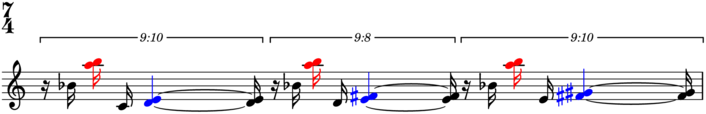>>> selector.color(result) >>> abjad.show(lilypond_file, strict=89)
-
(Selection).chord(n)¶ Selects chord n.
Selects chord -1:
>>> tuplets = [ ... "r16 bf'16 <a'' b''>16 c'16 <d' e'>4 ~ <d' e'>16", ... "r16 bf'16 <a'' b''>16 d'16 <e' fs'>4 ~ <e' fs'>16", ... "r16 bf'16 <a'' b''>16 e'16 <fs' gs'>4 ~ <fs' gs'>16", ... ] >>> tuplets = zip([(10, 9), (8, 9), (10, 9)], tuplets) >>> tuplets = [abjad.Tuplet(*_) for _ in tuplets] >>> tuplets = [abjad.select(tuplets)] >>> lilypond_file = abjad.LilyPondFile.rhythm(tuplets) >>> staff = lilypond_file[abjad.Staff] >>> abjad.setting(staff).auto_beaming = False >>> abjad.override(staff).tuplet_bracket.direction = abjad.Up >>> abjad.override(staff).tuplet_bracket.staff_padding = 3 >>> abjad.show(lilypond_file)
>>> result = abjad.select(staff).chord(-1)
>>> result Chord("<fs' gs'>16")
-
(Selection).chords()¶ Selects chords.
Selects chords:
>>> tuplets = [ ... "r16 bf'16 <a'' b''>16 c'16 <d' e'>4 ~ <d' e'>16", ... "r16 bf'16 <a'' b''>16 d'16 <e' fs'>4 ~ <e' fs'>16", ... "r16 bf'16 <a'' b''>16 e'16 <fs' gs'>4 ~ <fs' gs'>16", ... ] >>> tuplets = zip([(10, 9), (8, 9), (10, 9)], tuplets) >>> tuplets = [abjad.Tuplet(*_) for _ in tuplets] >>> tuplets = [abjad.select(tuplets)] >>> lilypond_file = abjad.LilyPondFile.rhythm(tuplets) >>> staff = lilypond_file[abjad.Staff] >>> abjad.setting(staff).auto_beaming = False >>> abjad.override(staff).tuplet_bracket.direction = abjad.Up >>> abjad.override(staff).tuplet_bracket.staff_padding = 3 >>> abjad.show(lilypond_file)
>>> result = abjad.select(staff).chords()
>>> for item in result: ... item ... Chord("<a'' b''>16") Chord("<d' e'>4") Chord("<d' e'>16") Chord("<a'' b''>16") Chord("<e' fs'>4") Chord("<e' fs'>16") Chord("<a'' b''>16") Chord("<fs' gs'>4") Chord("<fs' gs'>16")
>>> selector = abjad.select().chords() >>> result = selector(staff)
>>> selector.print(result) Chord("<a'' b''>16") Chord("<d' e'>4") Chord("<d' e'>16") Chord("<a'' b''>16") Chord("<e' fs'>4") Chord("<e' fs'>16") Chord("<a'' b''>16") Chord("<fs' gs'>4") Chord("<fs' gs'>16")
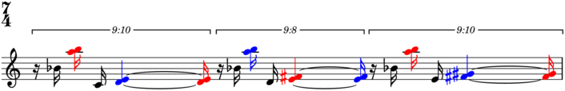>>> selector.color(result) >>> abjad.show(lilypond_file)
-
(Selection).components(prototype=None, grace_notes=None, reverse=False)¶ Selects components.
Selects notes:
Returns new selection (or expression).
-
enchain(counts)¶ Enchains items in selection.
Enchains leaves in alternating groups of 5:
>>> tuplets = [ ... "r16 bf'16 <a'' b''>16 c'16 <d' e'>4 ~ <d' e'>16", ... "r16 bf'16 <a'' b''>16 d'16 <e' fs'>4 ~ <e' fs'>16", ... "r16 bf'16 <a'' b''>16 e'16 <fs' gs'>4 ~ <fs' gs'>16", ... ] >>> tuplets = zip([(10, 9), (8, 9), (10, 9)], tuplets) >>> tuplets = [abjad.Tuplet(*_) for _ in tuplets] >>> tuplets = [abjad.select(tuplets)] >>> lilypond_file = abjad.LilyPondFile.rhythm(tuplets) >>> staff = lilypond_file[abjad.Staff] >>> abjad.setting(staff).auto_beaming = False >>> abjad.override(staff).tuplet_bracket.direction = abjad.Up >>> abjad.override(staff).tuplet_bracket.staff_padding = 3 >>> abjad.show(lilypond_file, strict=89)
>>> result = baca.select(staff).leaves().enchain([5])
>>> for item in result: ... item ... Selection([Rest('r16'), Note("bf'16"), Chord("<a'' b''>16"), Note("c'16"), Chord("<d' e'>4")]) Selection([Chord("<d' e'>4"), Chord("<d' e'>16"), Rest('r16'), Note("bf'16"), Chord("<a'' b''>16")]) Selection([Chord("<a'' b''>16"), Note("d'16"), Chord("<e' fs'>4"), Chord("<e' fs'>16"), Rest('r16')]) Selection([Rest('r16'), Note("bf'16"), Chord("<a'' b''>16"), Note("e'16"), Chord("<fs' gs'>4")]) Selection([Chord("<fs' gs'>4"), Chord("<fs' gs'>16")])
>>> selector = baca.leaves().enchain([5]) >>> result = selector(staff)
>>> selector.print(result) Selection([Rest('r16'), Note("bf'16"), Chord("<a'' b''>16"), Note("c'16"), Chord("<d' e'>4")]) Selection([Chord("<d' e'>4"), Chord("<d' e'>16"), Rest('r16'), Note("bf'16"), Chord("<a'' b''>16")]) Selection([Chord("<a'' b''>16"), Note("d'16"), Chord("<e' fs'>4"), Chord("<e' fs'>16"), Rest('r16')]) Selection([Rest('r16'), Note("bf'16"), Chord("<a'' b''>16"), Note("e'16"), Chord("<fs' gs'>4")]) Selection([Chord("<fs' gs'>4"), Chord("<fs' gs'>16")])
>>> for i, selection in enumerate(result): ... if i % 2 == 0: ... color, direction = 'red', abjad.Up ... else: ... color, direction = 'blue', abjad.Down ... for leaf in selection: ... markup = abjad.Markup('*').with_color(color).bold() ... markup = abjad.new(markup, direction=direction) ... abjad.attach(markup, leaf) ...
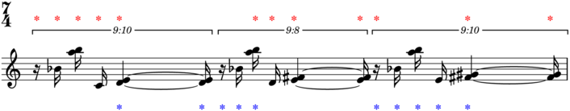>>> abjad.override(staff).text_script.staff_padding = 6 >>> abjad.show(lilypond_file, strict=89)
Returns new selection (or expression).
-
(Selection).filter(predicate=None)¶ Filters selection by predicate.
Selects runs with duration equal to 2/8:
>>> staff = abjad.Staff("c'8 r8 d'8 e'8 r8 f'8 g'8 a'8") >>> abjad.setting(staff).auto_beaming = False >>> abjad.show(staff)
>>> inequality = abjad.DurationInequality('==', (2, 8)) >>> result = abjad.select(staff).runs().filter(inequality)
>>> for item in result: ... item ... Run([Note("d'8"), Note("e'8")])
Returns new selection (or expression).
-
(Selection).filter_duration(operator, duration)¶ Filters selection by operator and duration.
Selects runs with duration equal to 2/8:
Selects runs with duration less than 3/8:
>>> staff = abjad.Staff("c'8 r8 d'8 e'8 r8 f'8 g'8 a'8") >>> abjad.setting(staff).auto_beaming = False >>> abjad.show(staff)
>>> result = abjad.select(staff).runs() >>> result = result.filter_duration('<', (3, 8))
>>> for item in result: ... item ... Run([Note("c'8")]) Run([Note("d'8"), Note("e'8")])
Returns new selection (or expression).
-
(Selection).filter_length(operator, length)¶ Filters selection by operator and length.
Selects notes runs with length greater than 1:
>>> staff = abjad.Staff("c'8 r8 d'8 e'8 r8 f'8 g'8 a'8") >>> abjad.setting(staff).auto_beaming = False >>> abjad.show(staff)
>>> result = abjad.select(staff).runs().filter_length('>', 1)
>>> for item in result: ... item ... Run([Note("d'8"), Note("e'8")]) Run([Note("f'8"), Note("g'8"), Note("a'8")])
Selects runs with length less than 3:
-
(Selection).filter_pitches(operator, pitches)¶ Filters selection by operator and pitches.
Selects leaves with pitches intersecting C4:
>>> staff = abjad.Staff("c'8 d'8 ~ d'8 e'8") >>> abjad.setting(staff).auto_beaming = False >>> staff.extend("r8 <c' e' g'>8 ~ <c' e' g'>4") >>> abjad.show(staff)
>>> result = abjad.select(staff).leaves() >>> result = result.filter_pitches('&', 'C4')
>>> for item in result: ... item ... Note("c'8") Chord("<c' e' g'>8") Chord("<c' e' g'>4")
>>> selector = abjad.select().leaves() >>> selector = selector.filter_pitches('&', 'C4') >>> result = selector(staff)
>>> selector.print(result) Note("c'8") Chord("<c' e' g'>8") Chord("<c' e' g'>4")
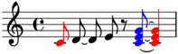>>> selector.color(result) >>> abjad.show(staff)
Selects leaves with pitches intersecting C4 or E4:
>>> staff = abjad.Staff("c'8 d'8 ~ d'8 e'8") >>> abjad.setting(staff).auto_beaming = False >>> staff.extend("r8 <c' e' g'>8 ~ <c' e' g'>4") >>> abjad.show(staff)
>>> result = abjad.select(staff).leaves() >>> result = result.filter_pitches('&', 'C4 E4')
>>> for item in result: ... item ... Note("c'8") Note("e'8") Chord("<c' e' g'>8") Chord("<c' e' g'>4")
>>> selector = abjad.select().leaves() >>> selector = selector.filter_pitches('&', 'C4 E4') >>> result = selector(staff)
>>> selector.print(result) Note("c'8") Note("e'8") Chord("<c' e' g'>8") Chord("<c' e' g'>4")
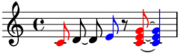>>> selector.color(result) >>> abjad.show(staff)
Selects logical ties with pitches intersecting C4:
>>> staff = abjad.Staff("c'8 d'8 ~ d'8 e'8") >>> abjad.setting(staff).auto_beaming = False >>> staff.extend("r8 <c' e' g'>8 ~ <c' e' g'>4") >>> abjad.show(staff)
>>> result = abjad.select(staff).logical_ties() >>> result = result.filter_pitches('&', 'C4')
>>> for item in result: ... item ... LogicalTie([Note("c'8")]) LogicalTie([Chord("<c' e' g'>8"), Chord("<c' e' g'>4")])
>>> selector = abjad.select().logical_ties() >>> selector = selector.filter_pitches('&', 'C4') >>> result = selector(staff)
>>> selector.print(result) LogicalTie([Note("c'8")]) LogicalTie([Chord("<c' e' g'>8"), Chord("<c' e' g'>4")])
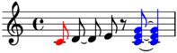>>> selector.color(result) >>> abjad.show(staff)
Returns new selection (or expression).
-
(Selection).filter_preprolated(operator, duration)¶ Filters selection by operator and preprolated duration.
Selects runs with duration equal to 2/8:
Selects runs with duration less than 3/8:
>>> staff = abjad.Staff("c'8 r8 d'8 e'8 r8 f'8 g'8 a'8") >>> abjad.setting(staff).auto_beaming = False >>> abjad.show(staff)
>>> result = abjad.select(staff).runs() >>> result = result.filter_preprolated('<', (3, 8))
>>> for item in result: ... item ... Run([Note("c'8")]) Run([Note("d'8"), Note("e'8")])
Returns new selection (or expression).
-
(Selection).flatten(depth=1)¶ Flattens selection to depth.
Selects first two leaves of each tuplet:
>>> tuplets = [ ... "r16 bf'16 <a'' b''>16 c'16 <d' e'>4 ~ <d' e'>16", ... "r16 bf'16 <a'' b''>16 d'16 <e' fs'>4 ~ <e' fs'>16", ... "r16 bf'16 <a'' b''>16 e'16 <fs' gs'>4 ~ <fs' gs'>16", ... ] >>> tuplets = zip([(10, 9), (8, 9), (10, 9)], tuplets) >>> tuplets = [abjad.Tuplet(*_) for _ in tuplets] >>> tuplets = [abjad.select(tuplets)] >>> lilypond_file = abjad.LilyPondFile.rhythm(tuplets) >>> staff = lilypond_file[abjad.Staff] >>> abjad.setting(staff).auto_beaming = False >>> abjad.override(staff).tuplet_bracket.direction = abjad.Up >>> abjad.override(staff).tuplet_bracket.staff_padding = 3 >>> abjad.show(lilypond_file)
>>> getter = abjad.select().leaves()[:2] >>> result = abjad.select(staff).tuplets().map(getter)
>>> for item in result: ... item ... Selection([Rest('r16'), Note("bf'16")]) Selection([Rest('r16'), Note("bf'16")]) Selection([Rest('r16'), Note("bf'16")])
>>> selector = abjad.select().tuplets().map(getter) >>> result = selector(staff)
>>> selector.print(result) Selection([Rest('r16'), Note("bf'16")]) Selection([Rest('r16'), Note("bf'16")]) Selection([Rest('r16'), Note("bf'16")])
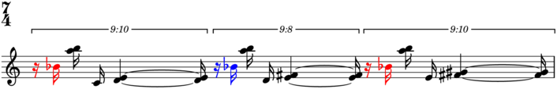>>> selector.color(result) >>> abjad.show(lilypond_file)
Selects first two leaves of all tuplets:
>>> tuplets = [ ... "r16 bf'16 <a'' b''>16 c'16 <d' e'>4 ~ <d' e'>16", ... "r16 bf'16 <a'' b''>16 d'16 <e' fs'>4 ~ <e' fs'>16", ... "r16 bf'16 <a'' b''>16 e'16 <fs' gs'>4 ~ <fs' gs'>16", ... ] >>> tuplets = zip([(10, 9), (8, 9), (10, 9)], tuplets) >>> tuplets = [abjad.Tuplet(*_) for _ in tuplets] >>> tuplets = [abjad.select(tuplets)] >>> lilypond_file = abjad.LilyPondFile.rhythm(tuplets) >>> staff = lilypond_file[abjad.Staff] >>> abjad.setting(staff).auto_beaming = False >>> abjad.override(staff).tuplet_bracket.direction = abjad.Up >>> abjad.override(staff).tuplet_bracket.staff_padding = 3 >>> abjad.show(lilypond_file)
>>> getter = abjad.select().leaves()[:2] >>> result = abjad.select(staff).tuplets().map(getter) >>> result = result.flatten()
>>> for item in result: ... item ... Rest('r16') Note("bf'16") Rest('r16') Note("bf'16") Rest('r16') Note("bf'16")
>>> selector = abjad.select().tuplets().map(getter).flatten() >>> result = selector(staff)
>>> selector.print(result) Rest('r16') Note("bf'16") Rest('r16') Note("bf'16") Rest('r16') Note("bf'16")
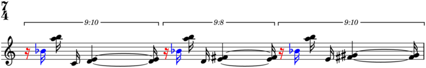>>> selector.color(result) >>> abjad.show(lilypond_file)
Returns new selection (or expression).
-
group()¶ Groups selection.
>>> staff = abjad.Staff(r''' ... c'8 ~ c'16 c'16 r8 c'16 c'16 ... d'8 ~ d'16 d'16 r8 d'16 d'16 ... ''') >>> abjad.setting(staff).auto_beaming = False >>> abjad.show(staff, strict=89)
>>> result = baca.select(staff).pleaves().group()
>>> for item in result: ... item ... Selection([Note("c'8"), Note("c'16"), Note("c'16"), Note("c'16"), Note("c'16"), Note("d'8"), Note("d'16"), Note("d'16"), Note("d'16"), Note("d'16")])
>>> selector = baca.select().pleaves().group() >>> result = selector(staff)
>>> selector.print(result) Selection([Selection([Note("c'8"), Note("c'16"), Note("c'16"), Note("c'16"), Note("c'16"), Note("d'8"), Note("d'16"), Note("d'16"), Note("d'16"), Note("d'16")])])
>>> selector.color(result) >>> abjad.show(staff, strict=89)

Returns nested selection (or expression).
-
(Selection).group_by(predicate=None)¶ Groups items in selection by predicate.
Wraps selection in selection when predicate is none:
>>> staff = abjad.Staff(r""" ... c'8 ~ c'16 c'16 r8 c'16 c'16 ... d'8 ~ d'16 d'16 r8 d'16 d'16 ... """) >>> abjad.setting(staff).auto_beaming = False >>> abjad.show(staff)
>>> result = abjad.select(staff).leaves(pitched=True) >>> result = result.group_by()
>>> for item in result: ... item ... Selection([Note("c'8"), Note("c'16"), Note("c'16"), Note("c'16"), Note("c'16"), Note("d'8"), Note("d'16"), Note("d'16"), Note("d'16"), Note("d'16")])
>>> selector = abjad.select().leaves(pitched=True).group_by() >>> result = selector(staff)
>>> selector.print(result) Selection([Selection([Note("c'8"), Note("c'16"), Note("c'16"), Note("c'16"), Note("c'16"), Note("d'8"), Note("d'16"), Note("d'16"), Note("d'16"), Note("d'16")])])
>>> selector.color(result) >>> abjad.show(staff)
Returns nested selection (or expression).
-
(Selection).group_by_contiguity()¶ Groups items in selection by contiguity.
Groups pitched leaves by contiguity:
>>> string = r"c'8 d' r \times 2/3 { e' r f' } g' a' r" >>> staff = abjad.Staff(string) >>> abjad.setting(staff).auto_beaming = False >>> staff.extend("r8 <c' e' g'>8 ~ <c' e' g'>4") >>> abjad.show(staff)
>>> result = abjad.select(staff).leaves(pitched=True) >>> result = result.group_by_contiguity()
>>> for item in result: ... item ... Selection([Note("c'8"), Note("d'8")]) Selection([Note("e'8")]) Selection([Note("f'8"), Note("g'8"), Note("a'8")]) Selection([Chord("<c' e' g'>8"), Chord("<c' e' g'>4")])
>>> selector = abjad.select().leaves(pitched=True) >>> selector = selector.group_by_contiguity() >>> result = selector(staff)
>>> selector.print(result) Selection([Note("c'8"), Note("d'8")]) Selection([Note("e'8")]) Selection([Note("f'8"), Note("g'8"), Note("a'8")]) Selection([Chord("<c' e' g'>8"), Chord("<c' e' g'>4")])
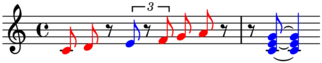>>> selector.color(result) >>> abjad.show(staff)
Groups sixteenths by contiguity:
>>> staff = abjad.Staff("c'4 d'16 d' d' d' e'4 f'16 f' f' f'") >>> abjad.setting(staff).auto_beaming = False >>> abjad.show(staff)
>>> result = abjad.select(staff).leaves() >>> result = result.filter_duration('==', (1, 16)) >>> result = result.group_by_contiguity()
>>> for item in result: ... item ... Selection([Note("d'16"), Note("d'16"), Note("d'16"), Note("d'16")]) Selection([Note("f'16"), Note("f'16"), Note("f'16"), Note("f'16")])
>>> selector = abjad.select().leaves() >>> selector = selector.filter_duration('==', (1, 16)) >>> selector = selector.group_by_contiguity() >>> result = selector(staff)
>>> selector.print(result) Selection([Note("d'16"), Note("d'16"), Note("d'16"), Note("d'16")]) Selection([Note("f'16"), Note("f'16"), Note("f'16"), Note("f'16")])
>>> selector.color(result) >>> abjad.show(staff)
Groups short-duration logical ties by contiguity; then gets leaf 0 in each group:
>>> staff = abjad.Staff("c'4 d'8 ~ d'16 e'16 ~ e'8 f'4 g'8") >>> abjad.setting(staff).auto_beaming = False >>> abjad.show(staff)
>>> result = abjad.select(staff).logical_ties() >>> result = result.filter_duration('<', (1, 4)) >>> result = result.group_by_contiguity() >>> result = result.map(abjad.select().leaves()[0])
>>> for item in result: ... item ... Note("d'8") Note("g'8")
>>> selector = abjad.select().logical_ties() >>> selector = selector.filter_duration('<', (1, 4)) >>> selector = selector.group_by_contiguity() >>> selector = selector.map(abjad.select().leaves()[0]) >>> result = selector(staff)
>>> selector.print(result) Note("d'8") Note("g'8")
>>> selector.color(result) >>> abjad.show(staff)
Groups pitched leaves pitch; then regroups each group by contiguity:
>>> staff = abjad.Staff(r""" ... c'8 ~ c'16 c'16 r8 c'16 c'16 ... d'8 ~ d'16 d'16 r8 d'16 d'16 ... """) >>> abjad.setting(staff).auto_beaming = False >>> abjad.show(staff)
>>> result = abjad.select(staff).leaves(pitched=True) >>> result = result.group_by_pitch() >>> result = result.map(abjad.select().group_by_contiguity()) >>> result = result.flatten()
>>> for item in result: ... item ... Selection([Note("c'8"), Note("c'16"), Note("c'16")]) Selection([Note("c'16"), Note("c'16")]) Selection([Note("d'8"), Note("d'16"), Note("d'16")]) Selection([Note("d'16"), Note("d'16")])
>>> selector = abjad.select().leaves(pitched=True) >>> selector = selector.group_by_pitch() >>> selector = selector.map( ... abjad.select().group_by_contiguity() ... ) >>> selector = selector.flatten() >>> result = selector(staff)
>>> selector.print(result) Selection([Note("c'8"), Note("c'16"), Note("c'16")]) Selection([Note("c'16"), Note("c'16")]) Selection([Note("d'8"), Note("d'16"), Note("d'16")]) Selection([Note("d'16"), Note("d'16")])
>>> selector.color(result) >>> abjad.show(staff)
Groups pitched logical ties by contiguity; then regroups each group by pitch:
>>> staff = abjad.Staff(r""" ... c'8 ~ c'16 c'16 r8 c'16 c'16 ... d'8 ~ d'16 d'16 r8 d'16 d'16 ... """) >>> abjad.setting(staff).auto_beaming = False >>> abjad.show(staff)
>>> getter = abjad.select().group_by_pitch()
>>> result = abjad.select(staff).logical_ties(pitched=True) >>> result = result.group_by_contiguity() >>> result = result.map(getter).flatten()
>>> for item in result: ... item ... Selection([LogicalTie([Note("c'8"), Note("c'16")]), LogicalTie([Note("c'16")])]) Selection([LogicalTie([Note("c'16")]), LogicalTie([Note("c'16")])]) Selection([LogicalTie([Note("d'8"), Note("d'16")]), LogicalTie([Note("d'16")])]) Selection([LogicalTie([Note("d'16")]), LogicalTie([Note("d'16")])])
>>> selector = abjad.select().logical_ties(pitched=True) >>> selector = selector.group_by_contiguity() >>> selector = selector.map(getter).flatten() >>> result = selector(staff)
>>> selector.print(result) Selection([LogicalTie([Note("c'8"), Note("c'16")]), LogicalTie([Note("c'16")])]) Selection([LogicalTie([Note("c'16")]), LogicalTie([Note("c'16")])]) Selection([LogicalTie([Note("d'8"), Note("d'16")]), LogicalTie([Note("d'16")])]) Selection([LogicalTie([Note("d'16")]), LogicalTie([Note("d'16")])])
>>> selector.color(result) >>> abjad.show(staff)
Returns new selection (or expression).
-
(Selection).group_by_duration()¶ Groups items in selection by duration.
Groups logical ties by duration:
>>> string = "c'4 ~ c'16 d' ~ d' d' e'4 ~ e'16 f' ~ f' f'" >>> staff = abjad.Staff(string) >>> abjad.setting(staff).auto_beaming = False >>> abjad.show(staff)
>>> result = abjad.select(staff).logical_ties() >>> result = result.group_by_duration()
>>> for item in result: ... item ... Selection([LogicalTie([Note("c'4"), Note("c'16")])]) Selection([LogicalTie([Note("d'16"), Note("d'16")])]) Selection([LogicalTie([Note("d'16")])]) Selection([LogicalTie([Note("e'4"), Note("e'16")])]) Selection([LogicalTie([Note("f'16"), Note("f'16")])]) Selection([LogicalTie([Note("f'16")])])
>>> selector = abjad.select().logical_ties().group_by_duration() >>> result = selector(staff)
>>> selector.print(result) Selection([LogicalTie([Note("c'4"), Note("c'16")])]) Selection([LogicalTie([Note("d'16"), Note("d'16")])]) Selection([LogicalTie([Note("d'16")])]) Selection([LogicalTie([Note("e'4"), Note("e'16")])]) Selection([LogicalTie([Note("f'16"), Note("f'16")])]) Selection([LogicalTie([Note("f'16")])])
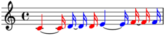>>> selector.color(result) >>> abjad.show(staff)
Returns nested selection (or expression).
-
(Selection).group_by_length()¶ Groups items in selection by length.
Groups logical ties by length:
>>> string = "c'4 ~ c'16 d' ~ d' d' e'4 ~ e'16 f' ~ f' f'" >>> staff = abjad.Staff(string) >>> abjad.setting(staff).auto_beaming = False >>> abjad.show(staff)
>>> result = abjad.select(staff).logical_ties().group_by_length()
>>> for item in result: ... item ... Selection([LogicalTie([Note("c'4"), Note("c'16")]), LogicalTie([Note("d'16"), Note("d'16")])]) Selection([LogicalTie([Note("d'16")])]) Selection([LogicalTie([Note("e'4"), Note("e'16")]), LogicalTie([Note("f'16"), Note("f'16")])]) Selection([LogicalTie([Note("f'16")])])
>>> selector = abjad.select().logical_ties().group_by_length() >>> result = selector(staff)
>>> selector.print(result) Selection([LogicalTie([Note("c'4"), Note("c'16")]), LogicalTie([Note("d'16"), Note("d'16")])]) Selection([LogicalTie([Note("d'16")])]) Selection([LogicalTie([Note("e'4"), Note("e'16")]), LogicalTie([Note("f'16"), Note("f'16")])]) Selection([LogicalTie([Note("f'16")])])
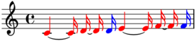>>> selector.color(result) >>> abjad.show(staff)
Returns nested selection (or expression).
-
(Selection).group_by_measure()¶ Groups items in selection by measure.
Groups leaves by logical measure:
>>> staff = abjad.Staff("c'8 d' e' f' g' a' b' c''") >>> abjad.setting(staff).auto_beaming = False >>> abjad.attach(abjad.TimeSignature((2, 8)), staff[0]) >>> abjad.attach(abjad.TimeSignature((3, 8)), staff[4]) >>> abjad.attach(abjad.TimeSignature((1, 8)), staff[7]) >>> abjad.show(staff)
>>> result = abjad.select(staff).leaves() >>> result = result.group_by_measure()
>>> for item in result: ... item ... Selection([Note("c'8"), Note("d'8")]) Selection([Note("e'8"), Note("f'8")]) Selection([Note("g'8"), Note("a'8"), Note("b'8")]) Selection([Note("c''8")])
>>> selector = abjad.select().leaves() >>> selector = selector.group_by_measure() >>> result = selector(staff)
>>> selector.print(result) Selection([Note("c'8"), Note("d'8")]) Selection([Note("e'8"), Note("f'8")]) Selection([Note("g'8"), Note("a'8"), Note("b'8")]) Selection([Note("c''8")])
>>> selector.color(result) >>> abjad.show(staff)
Groups leaves by logical measure and joins pairs of consecutive groups:
>>> staff = abjad.Staff("c'8 d' e' f' g' a' b' c''") >>> abjad.setting(staff).auto_beaming = False >>> abjad.attach(abjad.TimeSignature((2, 8)), staff[0]) >>> abjad.attach(abjad.TimeSignature((3, 8)), staff[4]) >>> abjad.attach(abjad.TimeSignature((1, 8)), staff[7]) >>> abjad.show(staff)
>>> result = abjad.select(staff).leaves() >>> result = result.group_by_measure() >>> result = result.partition_by_counts([2], cyclic=True) >>> result = result.map(abjad.select().flatten())
>>> for item in result: ... item ... Selection([Note("c'8"), Note("d'8"), Note("e'8"), Note("f'8")]) Selection([Note("g'8"), Note("a'8"), Note("b'8"), Note("c''8")])
>>> selector = abjad.select().leaves() >>> selector = selector.group_by_measure() >>> selector = selector.partition_by_counts([2], cyclic=True) >>> selector = selector.map(abjad.select().flatten()) >>> result = selector(staff)
>>> selector.print(result) Selection([Note("c'8"), Note("d'8"), Note("e'8"), Note("f'8")]) Selection([Note("g'8"), Note("a'8"), Note("b'8"), Note("c''8")])
>>> selector.color(result) >>> abjad.show(staff)

Groups leaves by logical measure; then gets item 0 in each group:
>>> staff = abjad.Staff("c'8 d' e' f' g' a' b' c''") >>> abjad.setting(staff).auto_beaming = False >>> abjad.attach(abjad.TimeSignature((2, 8)), staff[0]) >>> abjad.attach(abjad.TimeSignature((3, 8)), staff[4]) >>> abjad.attach(abjad.TimeSignature((1, 8)), staff[7]) >>> abjad.show(staff)
>>> result = abjad.select(staff).leaves() >>> result = result.group_by_measure() >>> result = result.map(abjad.select()[0])
>>> for item in result: ... item ... Note("c'8") Note("e'8") Note("g'8") Note("c''8")
Groups leaves by logical measure; then gets item -1 in each group:
>>> staff = abjad.Staff("c'8 d' e' f' g' a' b' c''") >>> abjad.setting(staff).auto_beaming = False >>> abjad.attach(abjad.TimeSignature((2, 8)), staff[0]) >>> abjad.attach(abjad.TimeSignature((3, 8)), staff[4]) >>> abjad.attach(abjad.TimeSignature((1, 8)), staff[7]) >>> abjad.show(staff)
>>> result = abjad.select(staff).leaves() >>> result = result.group_by_measure() >>> result = result.map(abjad.select()[-1])
>>> for item in result: ... item ... Note("d'8") Note("f'8") Note("b'8") Note("c''8")
Works with implicit time signatures:
>>> staff = abjad.Staff("c'4 d' e' f' g' a' b' c''") >>> abjad.setting(staff).auto_beaming = False >>> score = abjad.Score([staff]) >>> scheme = abjad.SchemeMoment((1, 16)) >>> abjad.setting(score).proportional_notation_duration = scheme >>> abjad.show(score)
>>> result = abjad.select(score).leaves() >>> result = result.group_by_measure()
>>> for item in result: ... item ... Selection([Note("c'4"), Note("d'4"), Note("e'4"), Note("f'4")]) Selection([Note("g'4"), Note("a'4"), Note("b'4"), Note("c''4")])
>>> selector = abjad.select().leaves() >>> selector = selector.group_by_measure() >>> result = selector(score)
>>> selector.print(result) Selection([Note("c'4"), Note("d'4"), Note("e'4"), Note("f'4")]) Selection([Note("g'4"), Note("a'4"), Note("b'4"), Note("c''4")])
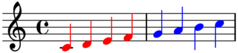>>> selector.color(result) >>> abjad.show(staff)
Returns new selection (or expression).
-
(Selection).group_by_pitch()¶ Groups items in selection by pitches.
Groups logical ties by pitches:
>>> string = "c'4 ~ c'16 d' ~ d' d' e'4 ~ e'16 f' ~ f' f'" >>> staff = abjad.Staff(string) >>> abjad.setting(staff).auto_beaming = False >>> abjad.show(staff)
>>> result = abjad.select(staff).logical_ties().group_by_pitch()
>>> for item in result: ... item ... Selection([LogicalTie([Note("c'4"), Note("c'16")])]) Selection([LogicalTie([Note("d'16"), Note("d'16")]), LogicalTie([Note("d'16")])]) Selection([LogicalTie([Note("e'4"), Note("e'16")])]) Selection([LogicalTie([Note("f'16"), Note("f'16")]), LogicalTie([Note("f'16")])])
>>> selector = abjad.select().logical_ties().group_by_pitch() >>> result = selector(staff)
>>> selector.print(result) Selection([LogicalTie([Note("c'4"), Note("c'16")])]) Selection([LogicalTie([Note("d'16"), Note("d'16")]), LogicalTie([Note("d'16")])]) Selection([LogicalTie([Note("e'4"), Note("e'16")])]) Selection([LogicalTie([Note("f'16"), Note("f'16")]), LogicalTie([Note("f'16")])])
>>> selector.color(result) >>> abjad.show(staff)
Returns nested selection (or expression).
-
(Sequence).index(value[, start[, stop]]) → integer -- return first index of value.¶ Raises ValueError if the value is not present.
-
(Selection).leaf(n)¶ Selects leaf n.
Selects leaf -1:
>>> tuplets = [ ... "r16 bf'16 <a'' b''>16 c'16 <d' e'>4 ~ <d' e'>16", ... "r16 bf'16 <a'' b''>16 d'16 <e' fs'>4 ~ <e' fs'>16", ... "r16 bf'16 <a'' b''>16 e'16 <fs' gs'>4 ~ <fs' gs'>16", ... ] >>> tuplets = zip([(10, 9), (8, 9), (10, 9)], tuplets) >>> tuplets = [abjad.Tuplet(*_) for _ in tuplets] >>> tuplets = [abjad.select(tuplets)] >>> lilypond_file = abjad.LilyPondFile.rhythm(tuplets) >>> staff = lilypond_file[abjad.Staff] >>> abjad.setting(staff).auto_beaming = False >>> abjad.override(staff).tuplet_bracket.direction = abjad.Up >>> abjad.override(staff).tuplet_bracket.staff_padding = 3 >>> abjad.show(lilypond_file)
>>> result = abjad.select(staff).leaf(-1)
>>> result Chord("<fs' gs'>16")
-
(Selection).leaves(prototype=None, grace_notes=False, head=None, pitched=None, reverse=False, tail=None, trim=None)¶ Selects leaves (without grace notes).
Selects leaves:
>>> staff = abjad.Staff(r""" ... \times 2/3 { r8 d' e' } f' r ... r f' \times 2/3 { e' d' r8 } ... """) >>> abjad.setting(staff).auto_beaming = False >>> abjad.show(staff)
>>> result = abjad.select(staff).leaves()
>>> for item in result: ... item ... Rest('r8') Note("d'8") Note("e'8") Note("f'8") Rest('r8') Rest('r8') Note("f'8") Note("e'8") Note("d'8") Rest('r8')
>>> selector = abjad.select().leaves() >>> result = selector(staff)
>>> selector.print(result) Rest('r8') Note("d'8") Note("e'8") Note("f'8") Rest('r8') Rest('r8') Note("f'8") Note("e'8") Note("d'8") Rest('r8')
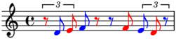>>> selector.color(result) >>> abjad.show(staff)
Selects pitched leaves:
>>> staff = abjad.Staff(r""" ... \times 2/3 { r8 d' e' } f' r ... r f' \times 2/3 { e' d' r8 } ... """) >>> abjad.setting(staff).auto_beaming = False >>> abjad.show(staff)
>>> result = abjad.select(staff).leaves(pitched=True)
>>> for item in result: ... item ... Note("d'8") Note("e'8") Note("f'8") Note("f'8") Note("e'8") Note("d'8")
>>> selector = abjad.select().leaves(pitched=True) >>> result = selector(staff)
>>> selector.print(result) Note("d'8") Note("e'8") Note("f'8") Note("f'8") Note("e'8") Note("d'8")
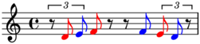>>> selector.color(result) >>> abjad.show(staff)
Trimmed leaves are the correct selection for ottava spanners.
Selects trimmed leaves:
>>> staff = abjad.Staff(r""" ... \times 2/3 { r8 d' e' } f' r ... r f' \times 2/3 { e' d' r8 } ... """) >>> abjad.setting(staff).auto_beaming = False >>> abjad.show(staff)
>>> result = abjad.select(staff).leaves(trim=True)
>>> for item in result: ... item ... Note("d'8") Note("e'8") Note("f'8") Rest('r8') Rest('r8') Note("f'8") Note("e'8") Note("d'8")
>>> selector = abjad.select().leaves(trim=True) >>> result = selector(staff)
>>> selector.print(result) Note("d'8") Note("e'8") Note("f'8") Rest('r8') Rest('r8') Note("f'8") Note("e'8") Note("d'8")
>>> abjad.attach(abjad.OctavationSpanner(), result)
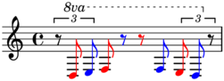>>> selector.color(result) >>> abjad.show(staff)
Regression: selects trimmed leaves (even when there are no rests to trim):
>>> staff = abjad.Staff(r""" ... \times 2/3 { c'8 d' e' } f' r ... r f' \times 2/3 { e' d' c' } ... """) >>> abjad.setting(staff).auto_beaming = False >>> abjad.show(staff)
>>> result = abjad.select(staff).leaves(trim=True)
>>> for item in result: ... item ... Note("c'8") Note("d'8") Note("e'8") Note("f'8") Rest('r8') Rest('r8') Note("f'8") Note("e'8") Note("d'8") Note("c'8")
>>> selector = abjad.select().leaves(trim=True) >>> result = selector(staff)
>>> selector.print(result) Note("c'8") Note("d'8") Note("e'8") Note("f'8") Rest('r8') Rest('r8') Note("f'8") Note("e'8") Note("d'8") Note("c'8")
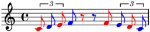>>> selector.color(result) >>> abjad.show(staff)
Selects leaves in tuplets:
>>> staff = abjad.Staff(r""" ... \times 2/3 { r8 d' e' } f' r ... r f' \times 2/3 { e' d' r8 } ... """) >>> abjad.setting(staff).auto_beaming = False >>> abjad.show(staff)
>>> result = abjad.select(staff).components(abjad.Tuplet) >>> result = result.leaves()
>>> for item in result: ... item ... Rest('r8') Note("d'8") Note("e'8") Note("e'8") Note("d'8") Rest('r8')
>>> selector = abjad.select().components(abjad.Tuplet) >>> selector = selector.leaves() >>> result = selector(staff)
>>> selector.print(result) Rest('r8') Note("d'8") Note("e'8") Note("e'8") Note("d'8") Rest('r8')
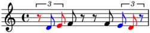>>> selector.color(result) >>> abjad.show(staff)
Selects trimmed leaves in tuplets:
>>> staff = abjad.Staff(r""" ... \times 2/3 { r8 d' e' } f' r ... r f' \times 2/3 { e' d' r8 } ... """) >>> abjad.setting(staff).auto_beaming = False >>> abjad.show(staff)
>>> result = abjad.select(staff).components(abjad.Tuplet) >>> result = result.leaves(trim=True)
>>> for item in result: ... item ... Note("d'8") Note("e'8") Note("e'8") Note("d'8")
>>> selector = abjad.select().components(abjad.Tuplet) >>> selector = selector.leaves(trim=True) >>> result = selector(staff)
>>> selector.print(result) Note("d'8") Note("e'8") Note("e'8") Note("d'8")
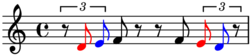>>> selector.color(result) >>> abjad.show(staff)
Pitched heads is the correct selection for most articulations.
Selects pitched heads in tuplets:
>>> staff = abjad.Staff(r""" ... \times 2/3 { c'8 d' ~ d' } e' r ... r e' \times 2/3 { d' ~ d' c' } ... """) >>> abjad.setting(staff).auto_beaming = False >>> abjad.show(staff)
>>> result = abjad.select(staff).components(abjad.Tuplet) >>> result = result.leaves(head=True, pitched=True)
>>> for item in result: ... item ... Note("c'8") Note("d'8") Note("d'8") Note("c'8")
Pitched tails in the correct selection for laissez vibrer.
Selects pitched tails in tuplets:
>>> staff = abjad.Staff(r""" ... \times 2/3 { c'8 d' ~ d' } e' r ... r e' \times 2/3 { d' ~ d' c' } ... """) >>> abjad.setting(staff).auto_beaming = False >>> abjad.show(staff)
>>> result = abjad.select(staff).components(abjad.Tuplet) >>> result = result.leaves(tail=True, pitched=True)
>>> for item in result: ... item ... Note("c'8") Note("d'8") Note("d'8") Note("c'8")
>>> selector = abjad.select() >>> selector = selector.components(abjad.Tuplet) >>> selector = selector.leaves(tail=True, pitched=True) >>> result = selector(staff)
>>> selector.print(result) Note("c'8") Note("d'8") Note("d'8") Note("c'8")
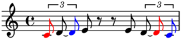>>> selector.color(result) >>> abjad.show(staff)
Chord heads are the correct selection for arpeggios.
Selects chord heads in tuplets:
>>> staff = abjad.Staff(r""" ... \times 2/3 { <c' e' g'>8 ~ <c' e' g'> d' } e' r ... r <g d' fs'> \times 2/3 { e' <c' d'> ~ <c' d'> } ... """) >>> abjad.setting(staff).auto_beaming = False >>> abjad.show(staff)
>>> result = abjad.select(staff).components(abjad.Tuplet) >>> result = result.leaves(abjad.Chord, head=True)
>>> for item in result: ... item ... Chord("<c' e' g'>8") Chord("<c' d'>8")
Returns new selection (or expression).
-
lleak()¶ Leaks to the left.
Selects runs (each leaked to the left):
>>> staff = abjad.Staff("c'8 r8 d'8 e'8 r8 f'8 g'8 a'8") >>> abjad.setting(staff).auto_beaming = False >>> abjad.show(staff, strict=89)
>>> result = baca.select(staff).runs().map(baca.lleak())
>>> for item in result: ... item ... Selection([Note("c'8")]) Selection([Rest('r8'), Note("d'8"), Note("e'8")]) Selection([Rest('r8'), Note("f'8"), Note("g'8"), Note("a'8")])
>>> selector = baca.select().runs().map(baca.lleak()) >>> result = selector(staff)
>>> selector.print(result) Selection([Note("c'8")]) Selection([Rest('r8'), Note("d'8"), Note("e'8")]) Selection([Rest('r8'), Note("f'8"), Note("g'8"), Note("a'8")])
>>> selector.color(result) >>> abjad.show(staff, strict=89)
Returns new selection (or expression).
-
lleaves()¶ Selects leaves, leaked to the left.
Selects leaves (leaked to the left) in tuplet 1:
>>> tuplets = [ ... "r16 bf'16 <a'' b''>16 c'16 <d' e'>4 ~ <d' e'>16", ... "r16 bf'16 <a'' b''>16 d'16 <e' fs'>4 ~ <e' fs'>16", ... "r16 bf'16 <a'' b''>16 e'16 <fs' gs'>4 ~ <fs' gs'>16", ... ] >>> tuplets = zip([(10, 9), (8, 9), (10, 9)], tuplets) >>> tuplets = [abjad.Tuplet(*_) for _ in tuplets] >>> tuplets = [abjad.select(tuplets)] >>> lilypond_file = abjad.LilyPondFile.rhythm(tuplets) >>> staff = lilypond_file[abjad.Staff] >>> abjad.setting(staff).auto_beaming = False >>> abjad.override(staff).tuplet_bracket.direction = abjad.Up >>> abjad.override(staff).tuplet_bracket.staff_padding = 3 >>> abjad.show(lilypond_file, strict=89)
>>> result = baca.select(staff).tuplets()[1:2].lleaves()
>>> for item in result: ... item ... Chord("<d' e'>16") Rest('r16') Note("bf'16") Chord("<a'' b''>16") Note("d'16") Chord("<e' fs'>4") Chord("<e' fs'>16")
-
(Selection).logical_ties(grace_notes=False, nontrivial=None, pitched=None, reverse=False)¶ Selects logical ties (without grace notes).
Selects logical ties:
>>> staff = abjad.Staff("c'8 d' ~ { d' e' r f'~ } f' r") >>> abjad.setting(staff).auto_beaming = False >>> abjad.show(staff)
>>> result = abjad.select(staff).logical_ties()
>>> for item in result: ... item ... LogicalTie([Note("c'8")]) LogicalTie([Note("d'8"), Note("d'8")]) LogicalTie([Note("e'8")]) LogicalTie([Rest('r8')]) LogicalTie([Note("f'8"), Note("f'8")]) LogicalTie([Rest('r8')])
>>> selector = abjad.select().logical_ties() >>> result = selector(staff)
>>> selector.print(result) LogicalTie([Note("c'8")]) LogicalTie([Note("d'8"), Note("d'8")]) LogicalTie([Note("e'8")]) LogicalTie([Rest('r8')]) LogicalTie([Note("f'8"), Note("f'8")]) LogicalTie([Rest('r8')])
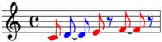>>> selector.color(result) >>> abjad.show(staff)
Selects pitched logical ties:
>>> staff = abjad.Staff("c'8 d' ~ { d' e' r f'~ } f' r") >>> abjad.setting(staff).auto_beaming = False >>> abjad.show(staff)
>>> result = abjad.select(staff).logical_ties(pitched=True)
>>> for item in result: ... item ... LogicalTie([Note("c'8")]) LogicalTie([Note("d'8"), Note("d'8")]) LogicalTie([Note("e'8")]) LogicalTie([Note("f'8"), Note("f'8")])
Selects pitched nontrivial logical ties:
>>> staff = abjad.Staff("c'8 d' ~ { d' e' r f'~ } f' r") >>> abjad.setting(staff).auto_beaming = False >>> abjad.show(staff)
>>> result = abjad.select(staff).logical_ties( ... pitched=True, ... nontrivial=True, ... )
>>> for item in result: ... item ... LogicalTie([Note("d'8"), Note("d'8")]) LogicalTie([Note("f'8"), Note("f'8")])
>>> selector = abjad.select().logical_ties( ... pitched=True, ... nontrivial=True, ... ) >>> result = selector(staff)
>>> selector.print(result) LogicalTie([Note("d'8"), Note("d'8")]) LogicalTie([Note("f'8"), Note("f'8")])
>>> selector.color(result) >>> abjad.show(staff)

Selects pitched logical ties (starting) in each tuplet:
>>> staff = abjad.Staff(r""" ... \times 2/3 { c'8 d' e' ~ } e' f' ~ ... \times 2/3 { f' g' a' ~ } a' b' ~ ... \times 2/3 { b' c'' d'' } ... """) >>> abjad.setting(staff).auto_beaming = False >>> abjad.show(staff)
>>> getter = abjad.select().logical_ties(pitched=True) >>> result = abjad.select(staff).components(abjad.Tuplet) >>> result = result.map(getter)
>>> for item in result: ... item ... Selection([LogicalTie([Note("c'8")]), LogicalTie([Note("d'8")]), LogicalTie([Note("e'8"), Note("e'8")])]) Selection([LogicalTie([Note("g'8")]), LogicalTie([Note("a'8"), Note("a'8")])]) Selection([LogicalTie([Note("c''8")]), LogicalTie([Note("d''8")])])
>>> selector = abjad.select().components(abjad.Tuplet) >>> selector = selector.map(getter) >>> result = selector(staff)
>>> selector.print(result) Selection([LogicalTie([Note("c'8")]), LogicalTie([Note("d'8")]), LogicalTie([Note("e'8"), Note("e'8")])]) Selection([LogicalTie([Note("g'8")]), LogicalTie([Note("a'8"), Note("a'8")])]) Selection([LogicalTie([Note("c''8")]), LogicalTie([Note("d''8")])])
>>> selector.color(result) >>> abjad.show(staff)
Selects pitched logical ties (starting) in each of the last two tuplets:
>>> staff = abjad.Staff(r""" ... \times 2/3 { c'8 d' e' ~ } e' f' ~ ... \times 2/3 { f' g' a' ~ } a' b' ~ ... \times 2/3 { b' c'' d'' } ... """) >>> abjad.setting(staff).auto_beaming = False >>> abjad.show(staff)
>>> getter = abjad.select().logical_ties(pitched=True) >>> result = abjad.select(staff).components(abjad.Tuplet)[-2:] >>> result = result.map(getter)
>>> for item in result: ... item ... Selection([LogicalTie([Note("g'8")]), LogicalTie([Note("a'8"), Note("a'8")])]) Selection([LogicalTie([Note("c''8")]), LogicalTie([Note("d''8")])])
>>> selector = abjad.select().components(abjad.Tuplet)[-2:] >>> selector = selector.map(getter) >>> result = selector(staff)
>>> selector.print(result) Selection([LogicalTie([Note("g'8")]), LogicalTie([Note("a'8"), Note("a'8")])]) Selection([LogicalTie([Note("c''8")]), LogicalTie([Note("d''8")])])
>>> selector.color(result) >>> abjad.show(staff)
Returns new selection (or expression).
-
lt(n)¶ Selects logical tie n.
Selects logical tie -1:
>>> tuplets = [ ... "r16 bf'16 <a'' b''>16 c'16 <d' e'>4 ~ <d' e'>16", ... "r16 bf'16 <a'' b''>16 d'16 <e' fs'>4 ~ <e' fs'>16", ... "r16 bf'16 <a'' b''>16 e'16 <fs' gs'>4 ~ <fs' gs'>16", ... ] >>> tuplets = zip([(10, 9), (8, 9), (10, 9)], tuplets) >>> tuplets = [abjad.Tuplet(*_) for _ in tuplets] >>> tuplets = [abjad.select(tuplets)] >>> lilypond_file = abjad.LilyPondFile.rhythm(tuplets) >>> staff = lilypond_file[abjad.Staff] >>> abjad.setting(staff).auto_beaming = False >>> abjad.override(staff).tuplet_bracket.direction = abjad.Up >>> abjad.override(staff).tuplet_bracket.staff_padding = 3 >>> abjad.show(lilypond_file, strict=89)
>>> result = baca.select(staff).lt(-1)
>>> result LogicalTie([Chord("<fs' gs'>4"), Chord("<fs' gs'>16")])
>>> selector = baca.lt(-1) >>> result = selector(staff)
>>> selector.print(result) LogicalTie([Chord("<fs' gs'>4"), Chord("<fs' gs'>16")])
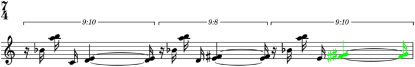>>> selector.color(result) >>> abjad.show(lilypond_file, strict=89)
-
ltqrun(n)¶ Selects logical tie equipitch run n.
Selects logical tie equipitch run -1:
>>> tuplets = [ ... "r16 c'16 c'16 c'16 <d' e'>4 ~ <d' e'>16", ... "r16 d'16 d'16 d'16 <e' fs'>4 ~ <e' fs'>16", ... "r16 e'16 e'16 e'16 <fs' gs'>4 ~ <fs' gs'>16", ... ] >>> tuplets = zip([(10, 9), (8, 9), (10, 9)], tuplets) >>> tuplets = [abjad.Tuplet(*_) for _ in tuplets] >>> tuplets = [abjad.select(tuplets)] >>> lilypond_file = abjad.LilyPondFile.rhythm(tuplets) >>> staff = lilypond_file[abjad.Staff] >>> abjad.setting(staff).auto_beaming = False >>> abjad.override(staff).tuplet_bracket.direction = abjad.Up >>> abjad.override(staff).tuplet_bracket.staff_padding = 3 >>> abjad.show(lilypond_file, strict=89)
>>> result = baca.select(staff).ltqrun(-1)
>>> result Run([LogicalTie([Chord("<fs' gs'>4"), Chord("<fs' gs'>16")])])
>>> selector = baca.ltqrun(-1) >>> result = selector(staff)
>>> selector.print(result) Run([LogicalTie([Chord("<fs' gs'>4"), Chord("<fs' gs'>16")])])
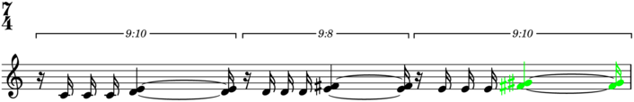>>> selector.color(result) >>> abjad.show(lilypond_file, strict=89)
-
ltqruns()¶ Selects logical tie equipitch runs.
Selects logical tie equipitch runs:
>>> tuplets = [ ... "r16 c'16 c'16 c'16 <d' e'>4 ~ <d' e'>16", ... "r16 d'16 d'16 d'16 <e' fs'>4 ~ <e' fs'>16", ... "r16 e'16 e'16 e'16 <fs' gs'>4 ~ <fs' gs'>16", ... ] >>> tuplets = zip([(10, 9), (8, 9), (10, 9)], tuplets) >>> tuplets = [abjad.Tuplet(*_) for _ in tuplets] >>> tuplets = [abjad.select(tuplets)] >>> lilypond_file = abjad.LilyPondFile.rhythm(tuplets) >>> staff = lilypond_file[abjad.Staff] >>> abjad.setting(staff).auto_beaming = False >>> abjad.override(staff).tuplet_bracket.direction = abjad.Up >>> abjad.override(staff).tuplet_bracket.staff_padding = 3 >>> abjad.show(lilypond_file, strict=89)
>>> result = baca.select(staff).ltqruns()
>>> for item in result: ... item ... Run([LogicalTie([Note("c'16")]), LogicalTie([Note("c'16")]), LogicalTie([Note("c'16")])]) Run([LogicalTie([Chord("<d' e'>4"), Chord("<d' e'>16")])]) Run([LogicalTie([Note("d'16")]), LogicalTie([Note("d'16")]), LogicalTie([Note("d'16")])]) Run([LogicalTie([Chord("<e' fs'>4"), Chord("<e' fs'>16")])]) Run([LogicalTie([Note("e'16")]), LogicalTie([Note("e'16")]), LogicalTie([Note("e'16")])]) Run([LogicalTie([Chord("<fs' gs'>4"), Chord("<fs' gs'>16")])])
>>> selector = baca.ltqruns() >>> result = selector(staff)
>>> selector.print(result) Run([LogicalTie([Note("c'16")]), LogicalTie([Note("c'16")]), LogicalTie([Note("c'16")])]) Run([LogicalTie([Chord("<d' e'>4"), Chord("<d' e'>16")])]) Run([LogicalTie([Note("d'16")]), LogicalTie([Note("d'16")]), LogicalTie([Note("d'16")])]) Run([LogicalTie([Chord("<e' fs'>4"), Chord("<e' fs'>16")])]) Run([LogicalTie([Note("e'16")]), LogicalTie([Note("e'16")]), LogicalTie([Note("e'16")])]) Run([LogicalTie([Chord("<fs' gs'>4"), Chord("<fs' gs'>16")])])
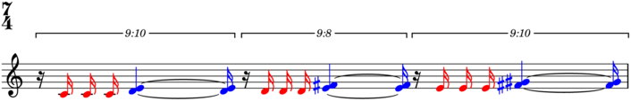>>> selector.color(result) >>> abjad.show(lilypond_file, strict=89)
-
ltrun(n)¶ Selects logical tie run n.
Selects logical tie run -1:
>>> tuplets = [ ... "r16 c'16 c'16 c'16 <d' e'>4 ~ <d' e'>16", ... "r16 d'16 d'16 d'16 <e' fs'>4 ~ <e' fs'>16", ... "r16 e'16 e'16 e'16 <fs' gs'>4 ~ <fs' gs'>16", ... ] >>> tuplets = zip([(10, 9), (8, 9), (10, 9)], tuplets) >>> tuplets = [abjad.Tuplet(*_) for _ in tuplets] >>> tuplets = [abjad.select(tuplets)] >>> lilypond_file = abjad.LilyPondFile.rhythm(tuplets) >>> staff = lilypond_file[abjad.Staff] >>> abjad.setting(staff).auto_beaming = False >>> abjad.override(staff).tuplet_bracket.direction = abjad.Up >>> abjad.override(staff).tuplet_bracket.staff_padding = 3 >>> abjad.show(lilypond_file, strict=89)
>>> result = baca.select(staff).ltrun(-1)
>>> result Run([LogicalTie([Note("e'16")]), LogicalTie([Note("e'16")]), LogicalTie([Note("e'16")]), LogicalTie([Chord("<fs' gs'>4"), Chord("<fs' gs'>16")])])
>>> selector = baca.ltrun(-1) >>> result = selector(staff)
>>> selector.print(result) Run([LogicalTie([Note("e'16")]), LogicalTie([Note("e'16")]), LogicalTie([Note("e'16")]), LogicalTie([Chord("<fs' gs'>4"), Chord("<fs' gs'>16")])])
>>> selector.color(result) >>> abjad.show(lilypond_file, strict=89)

-
ltruns()¶ Selects logical tie runs.
Selects logical tie runs:
>>> tuplets = [ ... "r16 c'16 c'16 c'16 <d' e'>4 ~ <d' e'>16", ... "r16 d'16 d'16 d'16 <e' fs'>4 ~ <e' fs'>16", ... "r16 e'16 e'16 e'16 <fs' gs'>4 ~ <fs' gs'>16", ... ] >>> tuplets = zip([(10, 9), (8, 9), (10, 9)], tuplets) >>> tuplets = [abjad.Tuplet(*_) for _ in tuplets] >>> tuplets = [abjad.select(tuplets)] >>> lilypond_file = abjad.LilyPondFile.rhythm(tuplets) >>> staff = lilypond_file[abjad.Staff] >>> abjad.setting(staff).auto_beaming = False >>> abjad.override(staff).tuplet_bracket.direction = abjad.Up >>> abjad.override(staff).tuplet_bracket.staff_padding = 3 >>> abjad.show(lilypond_file, strict=89)
>>> result = baca.select(staff).ltruns()
>>> for item in result: ... item ... Run([LogicalTie([Note("c'16")]), LogicalTie([Note("c'16")]), LogicalTie([Note("c'16")]), LogicalTie([Chord("<d' e'>4"), Chord("<d' e'>16")])]) Run([LogicalTie([Note("d'16")]), LogicalTie([Note("d'16")]), LogicalTie([Note("d'16")]), LogicalTie([Chord("<e' fs'>4"), Chord("<e' fs'>16")])]) Run([LogicalTie([Note("e'16")]), LogicalTie([Note("e'16")]), LogicalTie([Note("e'16")]), LogicalTie([Chord("<fs' gs'>4"), Chord("<fs' gs'>16")])])
>>> selector = baca.ltruns() >>> result = selector(staff)
>>> selector.print(result) Run([LogicalTie([Note("c'16")]), LogicalTie([Note("c'16")]), LogicalTie([Note("c'16")]), LogicalTie([Chord("<d' e'>4"), Chord("<d' e'>16")])]) Run([LogicalTie([Note("d'16")]), LogicalTie([Note("d'16")]), LogicalTie([Note("d'16")]), LogicalTie([Chord("<e' fs'>4"), Chord("<e' fs'>16")])]) Run([LogicalTie([Note("e'16")]), LogicalTie([Note("e'16")]), LogicalTie([Note("e'16")]), LogicalTie([Chord("<fs' gs'>4"), Chord("<fs' gs'>16")])])
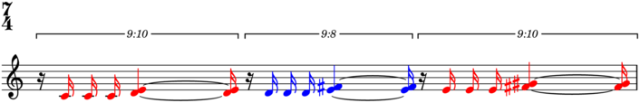>>> selector.color(result) >>> abjad.show(lilypond_file, strict=89)
-
lts()¶ Selects logical ties.
Selects logical ties:
>>> tuplets = [ ... "r16 bf'16 <a'' b''>16 c'16 <d' e'>4 ~ <d' e'>16", ... "r16 bf'16 <a'' b''>16 d'16 <e' fs'>4 ~ <e' fs'>16", ... "r16 bf'16 <a'' b''>16 e'16 <fs' gs'>4 ~ <fs' gs'>16", ... ] >>> tuplets = zip([(10, 9), (8, 9), (10, 9)], tuplets) >>> tuplets = [abjad.Tuplet(*_) for _ in tuplets] >>> tuplets = [abjad.select(tuplets)] >>> lilypond_file = abjad.LilyPondFile.rhythm(tuplets) >>> staff = lilypond_file[abjad.Staff] >>> abjad.setting(staff).auto_beaming = False >>> abjad.override(staff).tuplet_bracket.direction = abjad.Up >>> abjad.override(staff).tuplet_bracket.staff_padding = 3 >>> abjad.show(lilypond_file, strict=89)
>>> result = baca.select(staff).lts()
>>> for item in result: ... item ... LogicalTie([Rest('r16')]) LogicalTie([Note("bf'16")]) LogicalTie([Chord("<a'' b''>16")]) LogicalTie([Note("c'16")]) LogicalTie([Chord("<d' e'>4"), Chord("<d' e'>16")]) LogicalTie([Rest('r16')]) LogicalTie([Note("bf'16")]) LogicalTie([Chord("<a'' b''>16")]) LogicalTie([Note("d'16")]) LogicalTie([Chord("<e' fs'>4"), Chord("<e' fs'>16")]) LogicalTie([Rest('r16')]) LogicalTie([Note("bf'16")]) LogicalTie([Chord("<a'' b''>16")]) LogicalTie([Note("e'16")]) LogicalTie([Chord("<fs' gs'>4"), Chord("<fs' gs'>16")])
>>> selector = baca.lts() >>> result = selector(staff)
>>> selector.print(result) LogicalTie([Rest('r16')]) LogicalTie([Note("bf'16")]) LogicalTie([Chord("<a'' b''>16")]) LogicalTie([Note("c'16")]) LogicalTie([Chord("<d' e'>4"), Chord("<d' e'>16")]) LogicalTie([Rest('r16')]) LogicalTie([Note("bf'16")]) LogicalTie([Chord("<a'' b''>16")]) LogicalTie([Note("d'16")]) LogicalTie([Chord("<e' fs'>4"), Chord("<e' fs'>16")]) LogicalTie([Rest('r16')]) LogicalTie([Note("bf'16")]) LogicalTie([Chord("<a'' b''>16")]) LogicalTie([Note("e'16")]) LogicalTie([Chord("<fs' gs'>4"), Chord("<fs' gs'>16")])
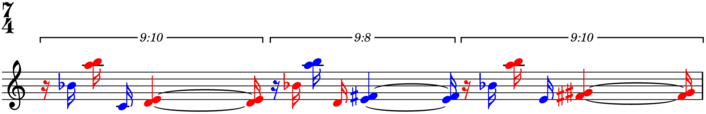>>> selector.color(result) >>> abjad.show(lilypond_file, strict=89)
-
(Selection).map(expression=None)¶ Maps expression to items in selection.
Selects each tuplet as a separate selection:
>>> staff = abjad.Staff(r""" ... \times 2/3 { r8 d' e' } f' r ... r f' \times 2/3 { e' d' r8 } ... """) >>> abjad.setting(staff).auto_beaming = False >>> abjad.show(staff)
>>> result = abjad.select(staff).components(abjad.Tuplet) >>> result = result.map(abjad.select())
>>> for item in result: ... item ... Selection([Tuplet(Multiplier(2, 3), "r8 d'8 e'8")]) Selection([Tuplet(Multiplier(2, 3), "e'8 d'8 r8")])
>>> selector = abjad.select().components(abjad.Tuplet) >>> selector = selector.map(abjad.select()) >>> result = selector(staff)
>>> selector.print(result) Selection([Tuplet(Multiplier(2, 3), "r8 d'8 e'8")]) Selection([Tuplet(Multiplier(2, 3), "e'8 d'8 r8")])
>>> selector.color(result) >>> abjad.show(staff)
Selects leaves in each component:
>>> staff = abjad.Staff(r""" ... \times 2/3 { r8 d' e' } f' r ... r f' \times 2/3 { e' d' r8 } ... """) >>> abjad.setting(staff).auto_beaming = False >>> abjad.show(staff)
>>> result = staff[:].map(abjad.select().leaves())
>>> for item in result: ... item ... Selection([Rest('r8'), Note("d'8"), Note("e'8")]) Selection([Note("f'8")]) Selection([Rest('r8')]) Selection([Rest('r8')]) Selection([Note("f'8")]) Selection([Note("e'8"), Note("d'8"), Rest('r8')])
>>> selector = abjad.select().map(abjad.select().leaves()) >>> result = selector(staff[:])
>>> selector.print(result) Selection([Rest('r8'), Note("d'8"), Note("e'8")]) Selection([Note("f'8")]) Selection([Rest('r8')]) Selection([Rest('r8')]) Selection([Note("f'8")]) Selection([Note("e'8"), Note("d'8"), Rest('r8')])
>>> selector.color(result) >>> abjad.show(staff)
Gets item 0 in each note run:
>>> string = r"c'4 \times 2/3 { d'8 r8 e'8 } r16 f'16 g'8 a'4" >>> staff = abjad.Staff(string) >>> abjad.setting(staff).auto_beaming = False >>> abjad.show(staff)
>>> result = abjad.select(staff).runs() >>> result = result.map(abjad.select()[0])
>>> for item in result: ... item ... Note("c'4") Note("e'8") Note("f'16")
Returns new selection (or expression).
-
(Selection).nontrivial()¶ Filters selection by length greater than 1.
Selects nontrivial runs:
-
(Selection).note(n)¶ Selects note n.
Selects note -1:
>>> tuplets = [ ... "r16 bf'16 <a'' b''>16 c'16 <d' e'>4 ~ <d' e'>16", ... "r16 bf'16 <a'' b''>16 d'16 <e' fs'>4 ~ <e' fs'>16", ... "r16 bf'16 <a'' b''>16 e'16 <fs' gs'>4 ~ <fs' gs'>16", ... ] >>> tuplets = zip([(10, 9), (8, 9), (10, 9)], tuplets) >>> tuplets = [abjad.Tuplet(*_) for _ in tuplets] >>> tuplets = [abjad.select(tuplets)] >>> lilypond_file = abjad.LilyPondFile.rhythm(tuplets) >>> staff = lilypond_file[abjad.Staff] >>> abjad.setting(staff).auto_beaming = False >>> abjad.override(staff).tuplet_bracket.direction = abjad.Up >>> abjad.override(staff).tuplet_bracket.staff_padding = 3 >>> abjad.show(lilypond_file)
>>> result = abjad.select(staff).note(-1)
>>> result Note("e'16")
-
(Selection).notes()¶ Selects notes.
Selects notes:
>>> tuplets = [ ... "r16 bf'16 <a'' b''>16 c'16 <d' e'>4 ~ <d' e'>16", ... "r16 bf'16 <a'' b''>16 d'16 <e' fs'>4 ~ <e' fs'>16", ... "r16 bf'16 <a'' b''>16 e'16 <fs' gs'>4 ~ <fs' gs'>16", ... ] >>> tuplets = zip([(10, 9), (8, 9), (10, 9)], tuplets) >>> tuplets = [abjad.Tuplet(*_) for _ in tuplets] >>> tuplets = [abjad.select(tuplets)] >>> lilypond_file = abjad.LilyPondFile.rhythm(tuplets) >>> staff = lilypond_file[abjad.Staff] >>> abjad.setting(staff).auto_beaming = False >>> abjad.override(staff).tuplet_bracket.direction = abjad.Up >>> abjad.override(staff).tuplet_bracket.staff_padding = 3 >>> abjad.show(lilypond_file)
>>> result = abjad.select(staff).notes()
>>> for item in result: ... item ... Note("bf'16") Note("c'16") Note("bf'16") Note("d'16") Note("bf'16") Note("e'16")
>>> selector = abjad.select().notes() >>> result = selector(staff)
>>> selector.print(result) Note("bf'16") Note("c'16") Note("bf'16") Note("d'16") Note("bf'16") Note("e'16")
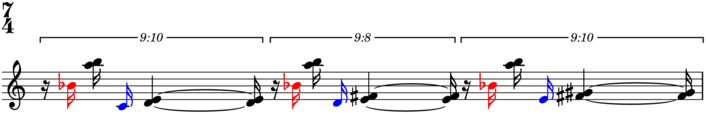>>> selector.color(result) >>> abjad.show(lilypond_file)
-
ntruns()¶ Selects nontrivial runs.
Selects nontrivial runs:
>>> tuplets = [ ... "r16 c'16 c'16 c'16 <d' e'>4 ~ <d' e'>16", ... "r16 d'16 d'16 d'16 <e' fs'>4 ~ <e' fs'>16", ... "r16 e'16 e'16 e'16 <fs' gs'>4 ~ <fs' gs'>16", ... ] >>> tuplets = zip([(10, 9), (8, 9), (10, 9)], tuplets) >>> tuplets = [abjad.Tuplet(*_) for _ in tuplets] >>> tuplets = [abjad.select(tuplets)] >>> lilypond_file = abjad.LilyPondFile.rhythm(tuplets) >>> staff = lilypond_file[abjad.Staff] >>> abjad.setting(staff).auto_beaming = False >>> abjad.override(staff).tuplet_bracket.direction = abjad.Up >>> abjad.override(staff).tuplet_bracket.staff_padding = 3 >>> abjad.show(lilypond_file, strict=89)
>>> result = baca.select(staff).ntruns()
>>> for item in result: ... item ... Run([Note("c'16"), Note("c'16"), Note("c'16"), Chord("<d' e'>4"), Chord("<d' e'>16")]) Run([Note("d'16"), Note("d'16"), Note("d'16"), Chord("<e' fs'>4"), Chord("<e' fs'>16")]) Run([Note("e'16"), Note("e'16"), Note("e'16"), Chord("<fs' gs'>4"), Chord("<fs' gs'>16")])
>>> selector = baca.ntruns() >>> result = selector(staff)
>>> selector.print(result) Run([Note("c'16"), Note("c'16"), Note("c'16"), Chord("<d' e'>4"), Chord("<d' e'>16")]) Run([Note("d'16"), Note("d'16"), Note("d'16"), Chord("<e' fs'>4"), Chord("<e' fs'>16")]) Run([Note("e'16"), Note("e'16"), Note("e'16"), Chord("<fs' gs'>4"), Chord("<fs' gs'>16")])
>>> selector.color(result) >>> abjad.show(lilypond_file, strict=89)
-
(Selection).partition_by_counts(counts, cyclic=False, enchain=False, fuse_overhang=False, nonempty=False, overhang=False)¶ Partitions selection by counts.
Partitions leaves into a single part of length 3; truncates overhang:
>>> staff = abjad.Staff("c'8 r8 d'8 e'8 r8 f'8 g'8 a'8") >>> abjad.setting(staff).auto_beaming = False >>> abjad.show(staff)
>>> result = abjad.select(staff).leaves() >>> result = result.partition_by_counts( ... [3], ... cyclic=False, ... overhang=False, ... )
>>> for item in result: ... item ... Selection([Note("c'8"), Rest('r8'), Note("d'8")])
Cyclically partitions leaves into parts of length 3; truncates overhang:
>>> staff = abjad.Staff("c'8 r8 d'8 e'8 r8 f'8 g'8 a'8") >>> abjad.setting(staff).auto_beaming = False >>> abjad.show(staff)
>>> result = abjad.select(staff).leaves().partition_by_counts( ... [3], ... cyclic=True, ... overhang=False, ... )
>>> for item in result: ... item ... Selection([Note("c'8"), Rest('r8'), Note("d'8")]) Selection([Note("e'8"), Rest('r8'), Note("f'8")])
>>> selector = abjad.select().leaves().partition_by_counts( ... [3], ... cyclic=True, ... overhang=False, ... ) >>> result = selector(staff)
>>> selector.print(result) Selection([Note("c'8"), Rest('r8'), Note("d'8")]) Selection([Note("e'8"), Rest('r8'), Note("f'8")])
>>> selector.color(result) >>> abjad.show(staff)
Cyclically partitions leaves into parts of length 3; returns overhang at end:
>>> staff = abjad.Staff("c'8 r8 d'8 e'8 r8 f'8 g'8 a'8") >>> abjad.setting(staff).auto_beaming = False >>> abjad.show(staff)
>>> result = abjad.select(staff).leaves().partition_by_counts( ... [3], ... cyclic=True, ... overhang=True, ... )
>>> for item in result: ... item ... Selection([Note("c'8"), Rest('r8'), Note("d'8")]) Selection([Note("e'8"), Rest('r8'), Note("f'8")]) Selection([Note("g'8"), Note("a'8")])
>>> selector = abjad.select().leaves().partition_by_counts( ... [3], ... cyclic=True, ... overhang=True, ... ) >>> result = selector(staff)
>>> selector.print(result) Selection([Note("c'8"), Rest('r8'), Note("d'8")]) Selection([Note("e'8"), Rest('r8'), Note("f'8")]) Selection([Note("g'8"), Note("a'8")])
>>> selector.color(result) >>> abjad.show(staff)
Cyclically partitions leaves into parts of length 3; fuses overhang to last part:
>>> staff = abjad.Staff("c'8 r8 d'8 e'8 r8 f'8 g'8 a'8") >>> abjad.setting(staff).auto_beaming = False >>> abjad.show(staff)
>>> result = abjad.select(staff).leaves().partition_by_counts( ... [3], ... cyclic=True, ... fuse_overhang=True, ... overhang=True, ... )
>>> for item in result: ... item ... Selection([Note("c'8"), Rest('r8'), Note("d'8")]) Selection([Note("e'8"), Rest('r8'), Note("f'8"), Note("g'8"), Note("a'8")])
>>> selector = abjad.select().leaves().partition_by_counts( ... [3], ... cyclic=True, ... fuse_overhang=True, ... overhang=True, ... ) >>> result = selector(staff)
>>> selector.print(result) Selection([Note("c'8"), Rest('r8'), Note("d'8")]) Selection([Note("e'8"), Rest('r8'), Note("f'8"), Note("g'8"), Note("a'8")])
>>> selector.color(result) >>> abjad.show(staff)
Cyclically partitions leaves into parts of length 3; returns overhang at end:
>>> string = "c'8 r8 d'8 e'8 r8 f'8 g'8 a'8 b'8 r8 c''8" >>> staff = abjad.Staff(string) >>> abjad.setting(staff).auto_beaming = False >>> abjad.show(staff)
>>> result = abjad.select(staff).leaves().partition_by_counts( ... [1, 2, 3], ... cyclic=True, ... overhang=True, ... )
>>> for item in result: ... item ... Selection([Note("c'8")]) Selection([Rest('r8'), Note("d'8")]) Selection([Note("e'8"), Rest('r8'), Note("f'8")]) Selection([Note("g'8")]) Selection([Note("a'8"), Note("b'8")]) Selection([Rest('r8'), Note("c''8")])
>>> selector = abjad.select().leaves().partition_by_counts( ... [1, 2, 3], ... cyclic=True, ... overhang=True, ... ) >>> result = selector(staff)
>>> selector.print(result) Selection([Note("c'8")]) Selection([Rest('r8'), Note("d'8")]) Selection([Note("e'8"), Rest('r8'), Note("f'8")]) Selection([Note("g'8")]) Selection([Note("a'8"), Note("b'8")]) Selection([Rest('r8'), Note("c''8")])
>>> selector.color(result, ['red', 'blue', 'cyan']) >>> abjad.show(staff)
Returns nested selection (or expression):
>>> type(result).__name__ 'Selection'
-
(Selection).partition_by_durations(durations, cyclic=False, fill=None, in_seconds=False, overhang=False)¶ Partitions selection by durations.
Cyclically partitions leaves into parts equal to exactly 3/8; returns overhang at end:
>>> staff = abjad.Staff( ... "abj: | 2/8 c'8 d'8 || 2/8 e'8 f'8 |" ... "| 2/8 g'8 a'8 || 2/8 b'8 c''8 |" ... ) >>> abjad.setting(staff).auto_beaming = False >>> abjad.show(staff)
>>> result = abjad.select(staff).leaves().partition_by_durations( ... [abjad.Duration(3, 8)], ... cyclic=True, ... fill=abjad.Exact, ... in_seconds=False, ... overhang=True, ... )
>>> for item in result: ... item ... Selection([Note("c'8"), Note("d'8"), Note("e'8")]) Selection([Note("f'8"), Note("g'8"), Note("a'8")]) Selection([Note("b'8"), Note("c''8")])
>>> selector = abjad.select().leaves().partition_by_durations( ... [abjad.Duration(3, 8)], ... cyclic=True, ... fill=abjad.Exact, ... in_seconds=False, ... overhang=True, ... ) >>> result = selector(staff)
>>> selector.print(result) Selection([Note("c'8"), Note("d'8"), Note("e'8")]) Selection([Note("f'8"), Note("g'8"), Note("a'8")]) Selection([Note("b'8"), Note("c''8")])
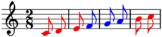>>> selector.color(result) >>> abjad.show(staff)
Partitions leaves into one part equal to exactly 3/8; truncates overhang:
>>> staff = abjad.Staff( ... "abj: | 2/8 c'8 d'8 || 2/8 e'8 f'8 |" ... "| 2/8 g'8 a'8 || 2/8 b'8 c''8 |" ... ) >>> abjad.setting(staff).auto_beaming = False >>> abjad.show(staff)
>>> result = abjad.select(staff).leaves() >>> result = result.partition_by_durations( ... [abjad.Duration(3, 8)], ... cyclic=False, ... fill=abjad.Exact, ... in_seconds=False, ... overhang=False, ... )
>>> for item in result: ... item ... Selection([Note("c'8"), Note("d'8"), Note("e'8")])
>>> selector = abjad.select().leaves() >>> selector = selector.partition_by_durations( ... [abjad.Duration(3, 8)], ... cyclic=False, ... fill=abjad.Exact, ... in_seconds=False, ... overhang=False, ... ) >>> result = selector(staff)
>>> selector.print(result) Selection([Note("c'8"), Note("d'8"), Note("e'8")])
>>> selector.color(result) >>> abjad.show(staff)
Cyclically partitions leaves into parts equal to (or just less than) 3/16 and 1/16; returns overhang at end:
>>> staff = abjad.Staff( ... "abj: | 2/8 c'8 d'8 || 2/8 e'8 f'8 |" ... "| 2/8 g'8 a'8 || 2/8 b'8 c''8 |" ... ) >>> abjad.setting(staff).auto_beaming = False >>> abjad.show(staff)
>>> result = abjad.select(staff).leaves() >>> result = result.partition_by_durations( ... [abjad.Duration(3, 16), abjad.Duration(1, 16)], ... cyclic=True, ... fill=abjad.More, ... in_seconds=False, ... overhang=True, ... )
>>> for item in result: ... item ... Selection([Note("c'8"), Note("d'8")]) Selection([Note("e'8")]) Selection([Note("f'8"), Note("g'8")]) Selection([Note("a'8")]) Selection([Note("b'8"), Note("c''8")])
>>> selector = abjad.select().leaves() >>> selector = selector.partition_by_durations( ... [abjad.Duration(3, 16), abjad.Duration(1, 16)], ... cyclic=True, ... fill=abjad.More, ... in_seconds=False, ... overhang=True, ... ) >>> result = selector(staff)
>>> selector.print(result) Selection([Note("c'8"), Note("d'8")]) Selection([Note("e'8")]) Selection([Note("f'8"), Note("g'8")]) Selection([Note("a'8")]) Selection([Note("b'8"), Note("c''8")])
>>> selector.color(result) >>> abjad.show(staff)

Cyclically partitions leaves into parts equal to (or just less than) 3/16; truncates overhang:
>>> staff = abjad.Staff( ... "abj: | 2/8 c'8 d'8 || 2/8 e'8 f'8 |" ... "| 2/8 g'8 a'8 || 2/8 b'8 c''8 |" ... ) >>> abjad.setting(staff).auto_beaming = False >>> abjad.show(staff)
>>> result = abjad.select(staff).leaves() >>> result = result.partition_by_durations( ... [abjad.Duration(3, 16)], ... cyclic=True, ... fill=abjad.Less, ... in_seconds=False, ... overhang=False, ... )
>>> for item in result: ... item ... Selection([Note("c'8")]) Selection([Note("d'8")]) Selection([Note("e'8")]) Selection([Note("f'8")]) Selection([Note("g'8")]) Selection([Note("a'8")]) Selection([Note("b'8")])
>>> selector = abjad.select().leaves() >>> selector = selector.partition_by_durations( ... [abjad.Duration(3, 16)], ... cyclic=True, ... fill=abjad.Less, ... in_seconds=False, ... overhang=False, ... ) >>> result = selector(staff)
>>> selector.print(result) Selection([Note("c'8")]) Selection([Note("d'8")]) Selection([Note("e'8")]) Selection([Note("f'8")]) Selection([Note("g'8")]) Selection([Note("a'8")]) Selection([Note("b'8")])
>>> selector.color(result) >>> abjad.show(staff)
Partitions leaves into a single part equal to (or just less than) 3/16; truncates overhang:
>>> staff = abjad.Staff( ... "abj: | 2/8 c'8 d'8 || 2/8 e'8 f'8 |" ... "| 2/8 g'8 a'8 || 2/8 b'8 c''8 |" ... ) >>> abjad.setting(staff).auto_beaming = False >>> abjad.show(staff)
>>> result = abjad.select(staff).leaves() >>> result = result.partition_by_durations( ... [abjad.Duration(3, 16)], ... cyclic=False, ... fill=abjad.Less, ... in_seconds=False, ... overhang=False, ... )
>>> for item in result: ... item ... Selection([Note("c'8")])
>>> selector = abjad.select().leaves() >>> selector = selector.partition_by_durations( ... [abjad.Duration(3, 16)], ... cyclic=False, ... fill=abjad.Less, ... in_seconds=False, ... overhang=False, ... ) >>> result = selector(staff)
>>> selector.print(result) Selection([Note("c'8")])
>>> selector.color(result) >>> abjad.show(staff)
Cyclically partitions leaves into parts equal to exactly 1.5 seconds; truncates overhang:
>>> staff = abjad.Staff( ... "abj: | 2/8 c'8 d'8 || 2/8 e'8 f'8 |" ... "| 2/8 g'8 a'8 || 2/8 b'8 c''8 |" ... ) >>> abjad.setting(staff).auto_beaming = False >>> mark = abjad.MetronomeMark((1, 4), 60) >>> leaf = abjad.inspect(staff).get_leaf(0) >>> abjad.attach(mark, leaf, context='Staff') >>> abjad.show(staff)
>>> result = abjad.select(staff).leaves() >>> result = result.partition_by_durations( ... [1.5], ... cyclic=True, ... fill=abjad.Exact, ... in_seconds=True, ... overhang=False, ... )
>>> for item in result: ... item ... Selection([Note("c'8"), Note("d'8"), Note("e'8")]) Selection([Note("f'8"), Note("g'8"), Note("a'8")])
>>> selector = abjad.select().leaves() >>> selector = selector.partition_by_durations( ... [1.5], ... cyclic=True, ... fill=abjad.Exact, ... in_seconds=True, ... overhang=False, ... ) >>> result = selector(staff)
>>> selector.print(result) Selection([Note("c'8"), Note("d'8"), Note("e'8")]) Selection([Note("f'8"), Note("g'8"), Note("a'8")])
>>> selector.color(result) >>> abjad.show(staff)
Cyclically partitions leaves into parts equal to exactly 1.5 seconds; returns overhang at end:
>>> staff = abjad.Staff( ... "abj: | 2/8 c'8 d'8 || 2/8 e'8 f'8 |" ... "| 2/8 g'8 a'8 || 2/8 b'8 c''8 |" ... ) >>> abjad.setting(staff).auto_beaming = False >>> mark = abjad.MetronomeMark((1, 4), 60) >>> leaf = abjad.inspect(staff).get_leaf(0) >>> abjad.attach(mark, leaf, context='Staff') >>> abjad.show(staff)
>>> result = abjad.select(staff).leaves() >>> result = result.partition_by_durations( ... [1.5], ... cyclic=True, ... fill=abjad.Exact, ... in_seconds=True, ... overhang=True, ... )
>>> for item in result: ... item ... Selection([Note("c'8"), Note("d'8"), Note("e'8")]) Selection([Note("f'8"), Note("g'8"), Note("a'8")]) Selection([Note("b'8"), Note("c''8")])
>>> selector = abjad.select().leaves() >>> selector = selector.partition_by_durations( ... [1.5], ... cyclic=True, ... fill=abjad.Exact, ... in_seconds=True, ... overhang=True, ... )
>>> selector.print(result) Selection([Note("c'8"), Note("d'8"), Note("e'8")]) Selection([Note("f'8"), Note("g'8"), Note("a'8")]) Selection([Note("b'8"), Note("c''8")])
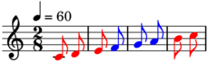>>> selector.color(result) >>> abjad.show(staff)
Partitions leaves into a single part equal to exactly 1.5 seconds; truncates overhang:
>>> staff = abjad.Staff( ... "abj: | 2/8 c'8 d'8 || 2/8 e'8 f'8 |" ... "| 2/8 g'8 a'8 || 2/8 b'8 c''8 |" ... ) >>> abjad.setting(staff).auto_beaming = False >>> mark = abjad.MetronomeMark((1, 4), 60) >>> leaf = abjad.inspect(staff).get_leaf(0) >>> abjad.attach(mark, leaf, context='Staff') >>> abjad.show(staff)
>>> result = abjad.select(staff).leaves() >>> result = result.partition_by_durations( ... [1.5], ... cyclic=False, ... fill=abjad.Exact, ... in_seconds=True, ... overhang=False, ... )
>>> for item in result: ... item ... Selection([Note("c'8"), Note("d'8"), Note("e'8")])
>>> selector = abjad.select().leaves() >>> selector = selector.partition_by_durations( ... [1.5], ... cyclic=False, ... fill=abjad.Exact, ... in_seconds=True, ... overhang=False, ... ) >>> result = selector(staff)
>>> selector.print(result) Selection([Note("c'8"), Note("d'8"), Note("e'8")])
>>> selector.color(result) >>> abjad.show(staff)
Cyclically partitions leaves into parts equal to (or just less than) 0.75 seconds; truncates overhang:
>>> staff = abjad.Staff( ... "abj: | 2/8 c'8 d'8 || 2/8 e'8 f'8 |" ... "| 2/8 g'8 a'8 || 2/8 b'8 c''8 |" ... ) >>> abjad.setting(staff).auto_beaming = False >>> mark = abjad.MetronomeMark((1, 4), 60) >>> leaf = abjad.inspect(staff).get_leaf(0) >>> abjad.attach(mark, leaf, context='Staff') >>> abjad.show(staff)
>>> result = abjad.select(staff).leaves() >>> result = result.partition_by_durations( ... [0.75], ... cyclic=True, ... fill=abjad.Less, ... in_seconds=True, ... overhang=False, ... )
>>> for item in result: ... item ... Selection([Note("c'8")]) Selection([Note("d'8")]) Selection([Note("e'8")]) Selection([Note("f'8")]) Selection([Note("g'8")]) Selection([Note("a'8")]) Selection([Note("b'8")])
>>> selector = abjad.select().leaves() >>> selector = selector.partition_by_durations( ... [0.75], ... cyclic=True, ... fill=abjad.Less, ... in_seconds=True, ... overhang=False, ... ) >>> result = selector(staff)
>>> selector.print(result) Selection([Note("c'8")]) Selection([Note("d'8")]) Selection([Note("e'8")]) Selection([Note("f'8")]) Selection([Note("g'8")]) Selection([Note("a'8")]) Selection([Note("b'8")])
>>> selector.color(result) >>> abjad.show(staff)
Partitions leaves into one part equal to (or just less than) 0.75 seconds; truncates overhang:
>>> staff = abjad.Staff( ... "abj: | 2/8 c'8 d'8 || 2/8 e'8 f'8 |" ... "| 2/8 g'8 a'8 || 2/8 b'8 c''8 |" ... ) >>> abjad.setting(staff).auto_beaming = False >>> mark = abjad.MetronomeMark((1, 4), 60) >>> leaf = abjad.inspect(staff).get_leaf(0) >>> abjad.attach(mark, leaf, context='Staff') >>> abjad.show(staff)
>>> result = abjad.select(staff).leaves() >>> result = result.partition_by_durations( ... [0.75], ... cyclic=False, ... fill=abjad.Less, ... in_seconds=True, ... overhang=False, ... )
>>> for item in result: ... item ... Selection([Note("c'8")])
>>> selector = abjad.select().leaves() >>> selector = selector.partition_by_durations( ... [0.75], ... cyclic=False, ... fill=abjad.Less, ... in_seconds=True, ... overhang=False, ... ) >>> result = selector(staff)
>>> selector.print(result) Selection([Note("c'8")])
>>> selector.color(result) >>> abjad.show(staff)
Interprets fill as Exact when fill is none.
Parts must equal durations exactly when fill is Exact.
Parts must be less than or equal to durations when fill is Less.
Parts must be greater or equal to durations when fill is More.
Reads durations cyclically when cyclic is true.
Reads component durations in seconds when in_seconds is true.
Returns remaining components at end in final part when overhang is true.
Returns nested selection (or expression):
>>> type(result).__name__ 'Selection'
-
(Selection).partition_by_ratio(ratio)¶ Partitions selection by ratio.
Partitions leaves by a ratio of 1:1:
>>> string = r"c'8 d' r \times 2/3 { e' r f' } g' a' r" >>> staff = abjad.Staff(string) >>> abjad.setting(staff).auto_beaming = False >>> abjad.show(staff)
>>> result = abjad.select(staff).leaves() >>> result = result.partition_by_ratio((1, 1))
>>> for item in result: ... item ... Selection([Note("c'8"), Note("d'8"), Rest('r8'), Note("e'8"), Rest('r8')]) Selection([Note("f'8"), Note("g'8"), Note("a'8"), Rest('r8')])
>>> selector = abjad.select().leaves() >>> selector = selector.partition_by_ratio((1, 1)) >>> result = selector(staff)
>>> selector.print(result) Selection([Note("c'8"), Note("d'8"), Rest('r8'), Note("e'8"), Rest('r8')]) Selection([Note("f'8"), Note("g'8"), Note("a'8"), Rest('r8')])
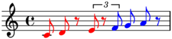>>> selector.color(result) >>> abjad.show(staff)
Partitions leaves by a ratio of 1:1:1:
>>> string = r"c'8 d' r \times 2/3 { e' r f' } g' a' r" >>> staff = abjad.Staff(string) >>> abjad.setting(staff).auto_beaming = False >>> abjad.show(staff)
>>> result = abjad.select(staff).leaves() >>> result = result.partition_by_ratio((1, 1, 1))
>>> for item in result: ... item ... Selection([Note("c'8"), Note("d'8"), Rest('r8')]) Selection([Note("e'8"), Rest('r8'), Note("f'8")]) Selection([Note("g'8"), Note("a'8"), Rest('r8')])
>>> selector = abjad.select().leaves() >>> selector = selector.partition_by_ratio((1, 1, 1)) >>> result = selector(staff)
>>> selector.print(result) Selection([Note("c'8"), Note("d'8"), Rest('r8')]) Selection([Note("e'8"), Rest('r8'), Note("f'8")]) Selection([Note("g'8"), Note("a'8"), Rest('r8')])
>>> selector.color(result, ['red', 'blue', 'cyan']) >>> abjad.show(staff)
Returns nested selection (or expression):
>>> type(result).__name__ 'Selection'
-
phead(n)¶ Selects pitched head n.
Selects pitched head -1:
>>> tuplets = [ ... "r16 bf'16 <a'' b''>16 c'16 <d' e'>4 ~ <d' e'>16", ... "r16 bf'16 <a'' b''>16 d'16 <e' fs'>4 ~ <e' fs'>16", ... "r16 bf'16 <a'' b''>16 e'16 <fs' gs'>4 ~ <fs' gs'>16", ... ] >>> tuplets = zip([(10, 9), (8, 9), (10, 9)], tuplets) >>> tuplets = [abjad.Tuplet(*_) for _ in tuplets] >>> tuplets = [abjad.select(tuplets)] >>> lilypond_file = abjad.LilyPondFile.rhythm(tuplets) >>> staff = lilypond_file[abjad.Staff] >>> abjad.setting(staff).auto_beaming = False >>> abjad.override(staff).tuplet_bracket.direction = abjad.Up >>> abjad.override(staff).tuplet_bracket.staff_padding = 3 >>> abjad.show(lilypond_file, strict=89)
>>> result = baca.select(staff).phead(-1)
>>> result Chord("<fs' gs'>4")
-
pheads()¶ Selects pitched heads.
Selects pitched heads:
>>> tuplets = [ ... "r16 bf'16 <a'' b''>16 c'16 <d' e'>4 ~ <d' e'>16", ... "r16 bf'16 <a'' b''>16 d'16 <e' fs'>4 ~ <e' fs'>16", ... "r16 bf'16 <a'' b''>16 e'16 <fs' gs'>4 ~ <fs' gs'>16", ... ] >>> tuplets = zip([(10, 9), (8, 9), (10, 9)], tuplets) >>> tuplets = [abjad.Tuplet(*_) for _ in tuplets] >>> tuplets = [abjad.select(tuplets)] >>> lilypond_file = abjad.LilyPondFile.rhythm(tuplets) >>> staff = lilypond_file[abjad.Staff] >>> abjad.setting(staff).auto_beaming = False >>> abjad.override(staff).tuplet_bracket.direction = abjad.Up >>> abjad.override(staff).tuplet_bracket.staff_padding = 3 >>> abjad.show(lilypond_file, strict=89)
>>> result = baca.select(staff).pheads()
>>> for item in result: ... item ... Note("bf'16") Chord("<a'' b''>16") Note("c'16") Chord("<d' e'>4") Note("bf'16") Chord("<a'' b''>16") Note("d'16") Chord("<e' fs'>4") Note("bf'16") Chord("<a'' b''>16") Note("e'16") Chord("<fs' gs'>4")
>>> selector = baca.pheads() >>> result = selector(staff)
>>> selector.print(result) Note("bf'16") Chord("<a'' b''>16") Note("c'16") Chord("<d' e'>4") Note("bf'16") Chord("<a'' b''>16") Note("d'16") Chord("<e' fs'>4") Note("bf'16") Chord("<a'' b''>16") Note("e'16") Chord("<fs' gs'>4")
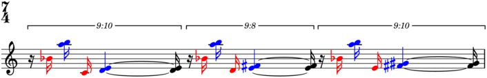>>> selector.color(result) >>> abjad.show(lilypond_file, strict=89)
-
pleaf(n)¶ Selects pitched leaf n.
Selects pitched leaf -1:
>>> tuplets = [ ... "r16 bf'16 <a'' b''>16 c'16 <d' e'>4 ~ <d' e'>16", ... "r16 bf'16 <a'' b''>16 d'16 <e' fs'>4 ~ <e' fs'>16", ... "r16 bf'16 <a'' b''>16 e'16 <fs' gs'>4 ~ <fs' gs'>16", ... ] >>> tuplets = zip([(10, 9), (8, 9), (10, 9)], tuplets) >>> tuplets = [abjad.Tuplet(*_) for _ in tuplets] >>> tuplets = [abjad.select(tuplets)] >>> lilypond_file = abjad.LilyPondFile.rhythm(tuplets) >>> staff = lilypond_file[abjad.Staff] >>> abjad.setting(staff).auto_beaming = False >>> abjad.override(staff).tuplet_bracket.direction = abjad.Up >>> abjad.override(staff).tuplet_bracket.staff_padding = 3 >>> abjad.show(lilypond_file, strict=89)
>>> result = baca.select(staff).pleaf(-1)
>>> result Chord("<fs' gs'>16")
-
pleaves()¶ Selects pitched leaves.
Selects pitched leaves:
>>> tuplets = [ ... "r16 bf'16 <a'' b''>16 c'16 <d' e'>4 ~ <d' e'>16", ... "r16 bf'16 <a'' b''>16 d'16 <e' fs'>4 ~ <e' fs'>16", ... "r16 bf'16 <a'' b''>16 e'16 <fs' gs'>4 ~ <fs' gs'>16", ... ] >>> tuplets = zip([(10, 9), (8, 9), (10, 9)], tuplets) >>> tuplets = [abjad.Tuplet(*_) for _ in tuplets] >>> tuplets = [abjad.select(tuplets)] >>> lilypond_file = abjad.LilyPondFile.rhythm(tuplets) >>> staff = lilypond_file[abjad.Staff] >>> abjad.setting(staff).auto_beaming = False >>> abjad.override(staff).tuplet_bracket.direction = abjad.Up >>> abjad.override(staff).tuplet_bracket.staff_padding = 3 >>> abjad.show(lilypond_file, strict=89)
>>> result = baca.select(staff).pleaves()
>>> for item in result: ... item ... Note("bf'16") Chord("<a'' b''>16") Note("c'16") Chord("<d' e'>4") Chord("<d' e'>16") Note("bf'16") Chord("<a'' b''>16") Note("d'16") Chord("<e' fs'>4") Chord("<e' fs'>16") Note("bf'16") Chord("<a'' b''>16") Note("e'16") Chord("<fs' gs'>4") Chord("<fs' gs'>16")
>>> selector = baca.pleaves() >>> result = selector(staff)
>>> selector.print(result) Note("bf'16") Chord("<a'' b''>16") Note("c'16") Chord("<d' e'>4") Chord("<d' e'>16") Note("bf'16") Chord("<a'' b''>16") Note("d'16") Chord("<e' fs'>4") Chord("<e' fs'>16") Note("bf'16") Chord("<a'' b''>16") Note("e'16") Chord("<fs' gs'>4") Chord("<fs' gs'>16")
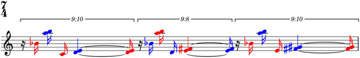>>> selector.color(result) >>> abjad.show(lilypond_file, strict=89)
-
plt(n)¶ Selects pitched logical tie n.
Selects pitched logical tie -1:
>>> tuplets = [ ... "r16 bf'16 <a'' b''>16 c'16 <d' e'>4 ~ <d' e'>16", ... "r16 bf'16 <a'' b''>16 d'16 <e' fs'>4 ~ <e' fs'>16", ... "r16 bf'16 <a'' b''>16 e'16 <fs' gs'>4 ~ <fs' gs'>16", ... ] >>> tuplets = zip([(10, 9), (8, 9), (10, 9)], tuplets) >>> tuplets = [abjad.Tuplet(*_) for _ in tuplets] >>> tuplets = [abjad.select(tuplets)] >>> lilypond_file = abjad.LilyPondFile.rhythm(tuplets) >>> staff = lilypond_file[abjad.Staff] >>> abjad.setting(staff).auto_beaming = False >>> abjad.override(staff).tuplet_bracket.direction = abjad.Up >>> abjad.override(staff).tuplet_bracket.staff_padding = 3 >>> abjad.show(lilypond_file, strict=89)
>>> result = baca.select(staff).plt(-1)
>>> result LogicalTie([Chord("<fs' gs'>4"), Chord("<fs' gs'>16")])
-
plts()¶ Selects pitched logical ties.
Selects pitched logical ties:
>>> tuplets = [ ... "r16 bf'16 <a'' b''>16 c'16 <d' e'>4 ~ <d' e'>16", ... "r16 bf'16 <a'' b''>16 d'16 <e' fs'>4 ~ <e' fs'>16", ... "r16 bf'16 <a'' b''>16 e'16 <fs' gs'>4 ~ <fs' gs'>16", ... ] >>> tuplets = zip([(10, 9), (8, 9), (10, 9)], tuplets) >>> tuplets = [abjad.Tuplet(*_) for _ in tuplets] >>> tuplets = [abjad.select(tuplets)] >>> lilypond_file = abjad.LilyPondFile.rhythm(tuplets) >>> staff = lilypond_file[abjad.Staff] >>> abjad.setting(staff).auto_beaming = False >>> abjad.override(staff).tuplet_bracket.direction = abjad.Up >>> abjad.override(staff).tuplet_bracket.staff_padding = 3 >>> abjad.show(lilypond_file, strict=89)
>>> result = baca.select(staff).plts()
>>> for item in result: ... item ... LogicalTie([Note("bf'16")]) LogicalTie([Chord("<a'' b''>16")]) LogicalTie([Note("c'16")]) LogicalTie([Chord("<d' e'>4"), Chord("<d' e'>16")]) LogicalTie([Note("bf'16")]) LogicalTie([Chord("<a'' b''>16")]) LogicalTie([Note("d'16")]) LogicalTie([Chord("<e' fs'>4"), Chord("<e' fs'>16")]) LogicalTie([Note("bf'16")]) LogicalTie([Chord("<a'' b''>16")]) LogicalTie([Note("e'16")]) LogicalTie([Chord("<fs' gs'>4"), Chord("<fs' gs'>16")])
>>> selector = baca.plts() >>> result = selector(staff)
>>> selector.print(result) LogicalTie([Note("bf'16")]) LogicalTie([Chord("<a'' b''>16")]) LogicalTie([Note("c'16")]) LogicalTie([Chord("<d' e'>4"), Chord("<d' e'>16")]) LogicalTie([Note("bf'16")]) LogicalTie([Chord("<a'' b''>16")]) LogicalTie([Note("d'16")]) LogicalTie([Chord("<e' fs'>4"), Chord("<e' fs'>16")]) LogicalTie([Note("bf'16")]) LogicalTie([Chord("<a'' b''>16")]) LogicalTie([Note("e'16")]) LogicalTie([Chord("<fs' gs'>4"), Chord("<fs' gs'>16")])
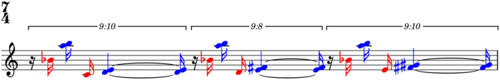>>> selector.color(result) >>> abjad.show(lilypond_file, strict=89)
-
ptail(n)¶ Selects pitched tail n.
Selects pitched tail -1:
>>> tuplets = [ ... "r16 bf'16 <a'' b''>16 c'16 <d' e'>4 ~ <d' e'>16", ... "r16 bf'16 <a'' b''>16 d'16 <e' fs'>4 ~ <e' fs'>16", ... "r16 bf'16 <a'' b''>16 e'16 <fs' gs'>4 ~ <fs' gs'>16", ... ] >>> tuplets = zip([(10, 9), (8, 9), (10, 9)], tuplets) >>> tuplets = [abjad.Tuplet(*_) for _ in tuplets] >>> tuplets = [abjad.select(tuplets)] >>> lilypond_file = abjad.LilyPondFile.rhythm(tuplets) >>> staff = lilypond_file[abjad.Staff] >>> abjad.setting(staff).auto_beaming = False >>> abjad.override(staff).tuplet_bracket.direction = abjad.Up >>> abjad.override(staff).tuplet_bracket.staff_padding = 3 >>> abjad.show(lilypond_file, strict=89)
>>> result = baca.select(staff).ptail(-1)
>>> result Chord("<fs' gs'>16")
-
ptails()¶ Selects pitched tails.
Selects pitched tails:
>>> tuplets = [ ... "r16 bf'16 <a'' b''>16 c'16 <d' e'>4 ~ <d' e'>16", ... "r16 bf'16 <a'' b''>16 d'16 <e' fs'>4 ~ <e' fs'>16", ... "r16 bf'16 <a'' b''>16 e'16 <fs' gs'>4 ~ <fs' gs'>16", ... ] >>> tuplets = zip([(10, 9), (8, 9), (10, 9)], tuplets) >>> tuplets = [abjad.Tuplet(*_) for _ in tuplets] >>> tuplets = [abjad.select(tuplets)] >>> lilypond_file = abjad.LilyPondFile.rhythm(tuplets) >>> staff = lilypond_file[abjad.Staff] >>> abjad.setting(staff).auto_beaming = False >>> abjad.override(staff).tuplet_bracket.direction = abjad.Up >>> abjad.override(staff).tuplet_bracket.staff_padding = 3 >>> abjad.show(lilypond_file, strict=89)
>>> result = baca.select(staff).ptails()
>>> for item in result: ... item ... Note("bf'16") Chord("<a'' b''>16") Note("c'16") Chord("<d' e'>16") Note("bf'16") Chord("<a'' b''>16") Note("d'16") Chord("<e' fs'>16") Note("bf'16") Chord("<a'' b''>16") Note("e'16") Chord("<fs' gs'>16")
>>> selector = baca.ptails() >>> result = selector(staff)
>>> selector.print(result) Note("bf'16") Chord("<a'' b''>16") Note("c'16") Chord("<d' e'>16") Note("bf'16") Chord("<a'' b''>16") Note("d'16") Chord("<e' fs'>16") Note("bf'16") Chord("<a'' b''>16") Note("e'16") Chord("<fs' gs'>16")
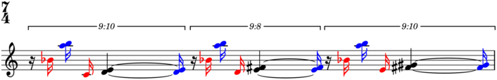>>> selector.color(result) >>> abjad.show(lilypond_file, strict=89)
-
ptlt(n)¶ Selects pitched trivial logical tie n.
Selects pitched trivial logical tie -1:
>>> tuplets = [ ... "r16 bf'16 <a'' b''>16 c'16 <d' e'>4 ~ <d' e'>16", ... "r16 bf'16 <a'' b''>16 d'16 <e' fs'>4 ~ <e' fs'>16", ... "r16 bf'16 <a'' b''>16 e'16 <fs' gs'>4 ~ <fs' gs'>16", ... ] >>> tuplets = zip([(10, 9), (8, 9), (10, 9)], tuplets) >>> tuplets = [abjad.Tuplet(*_) for _ in tuplets] >>> tuplets = [abjad.select(tuplets)] >>> lilypond_file = abjad.LilyPondFile.rhythm(tuplets) >>> staff = lilypond_file[abjad.Staff] >>> abjad.setting(staff).auto_beaming = False >>> abjad.override(staff).tuplet_bracket.direction = abjad.Up >>> abjad.override(staff).tuplet_bracket.staff_padding = 3 >>> abjad.show(lilypond_file, strict=89)
>>> result = baca.select(staff).ptlt(-1)
>>> result LogicalTie([Note("e'16")])
-
ptlts()¶ Selects pitched trivial logical ties.
Selects pitched trivial logical ties:
>>> tuplets = [ ... "r16 bf'16 <a'' b''>16 c'16 <d' e'>4 ~ <d' e'>16", ... "r16 bf'16 <a'' b''>16 d'16 <e' fs'>4 ~ <e' fs'>16", ... "r16 bf'16 <a'' b''>16 e'16 <fs' gs'>4 ~ <fs' gs'>16", ... ] >>> tuplets = zip([(10, 9), (8, 9), (10, 9)], tuplets) >>> tuplets = [abjad.Tuplet(*_) for _ in tuplets] >>> tuplets = [abjad.select(tuplets)] >>> lilypond_file = abjad.LilyPondFile.rhythm(tuplets) >>> staff = lilypond_file[abjad.Staff] >>> abjad.setting(staff).auto_beaming = False >>> abjad.override(staff).tuplet_bracket.direction = abjad.Up >>> abjad.override(staff).tuplet_bracket.staff_padding = 3 >>> abjad.show(lilypond_file, strict=89)
>>> result = baca.select(staff).ptlts()
>>> for item in result: ... item ... LogicalTie([Note("bf'16")]) LogicalTie([Chord("<a'' b''>16")]) LogicalTie([Note("c'16")]) LogicalTie([Note("bf'16")]) LogicalTie([Chord("<a'' b''>16")]) LogicalTie([Note("d'16")]) LogicalTie([Note("bf'16")]) LogicalTie([Chord("<a'' b''>16")]) LogicalTie([Note("e'16")])
>>> selector = baca.ptlts() >>> result = selector(staff)
>>> selector.print(result) LogicalTie([Note("bf'16")]) LogicalTie([Chord("<a'' b''>16")]) LogicalTie([Note("c'16")]) LogicalTie([Note("bf'16")]) LogicalTie([Chord("<a'' b''>16")]) LogicalTie([Note("d'16")]) LogicalTie([Note("bf'16")]) LogicalTie([Chord("<a'' b''>16")]) LogicalTie([Note("e'16")])
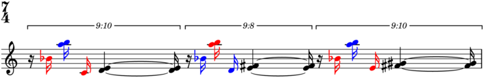>>> selector.color(result) >>> abjad.show(lilypond_file, strict=89)
-
qrun(n)¶ Selects equipitch run n.
Selects equipitch run -1:
>>> tuplets = [ ... "r16 c'16 c'16 c'16 <d' e'>4 ~ <d' e'>16", ... "r16 d'16 d'16 d'16 <e' fs'>4 ~ <e' fs'>16", ... "r16 e'16 e'16 e'16 <fs' gs'>4 ~ <fs' gs'>16", ... ] >>> tuplets = zip([(10, 9), (8, 9), (10, 9)], tuplets) >>> tuplets = [abjad.Tuplet(*_) for _ in tuplets] >>> tuplets = [abjad.select(tuplets)] >>> lilypond_file = abjad.LilyPondFile.rhythm(tuplets) >>> staff = lilypond_file[abjad.Staff] >>> abjad.setting(staff).auto_beaming = False >>> abjad.override(staff).tuplet_bracket.direction = abjad.Up >>> abjad.override(staff).tuplet_bracket.staff_padding = 3 >>> abjad.show(lilypond_file, strict=89)
>>> result = baca.select(staff).qrun(-1)
>>> result Run([Chord("<fs' gs'>4"), Chord("<fs' gs'>16")])
-
qruns()¶ Selects equipitch runs.
Selects equipitch runs:
>>> tuplets = [ ... "r16 c'16 c'16 c'16 <d' e'>4 ~ <d' e'>16", ... "r16 d'16 d'16 d'16 <e' fs'>4 ~ <e' fs'>16", ... "r16 e'16 e'16 e'16 <fs' gs'>4 ~ <fs' gs'>16", ... ] >>> tuplets = zip([(10, 9), (8, 9), (10, 9)], tuplets) >>> tuplets = [abjad.Tuplet(*_) for _ in tuplets] >>> tuplets = [abjad.select(tuplets)] >>> lilypond_file = abjad.LilyPondFile.rhythm(tuplets) >>> staff = lilypond_file[abjad.Staff] >>> abjad.setting(staff).auto_beaming = False >>> abjad.override(staff).tuplet_bracket.direction = abjad.Up >>> abjad.override(staff).tuplet_bracket.staff_padding = 3 >>> abjad.show(lilypond_file, strict=89)
>>> result = baca.select(staff).qruns()
>>> for item in result: ... item ... Run([Note("c'16"), Note("c'16"), Note("c'16")]) Run([Chord("<d' e'>4"), Chord("<d' e'>16")]) Run([Note("d'16"), Note("d'16"), Note("d'16")]) Run([Chord("<e' fs'>4"), Chord("<e' fs'>16")]) Run([Note("e'16"), Note("e'16"), Note("e'16")]) Run([Chord("<fs' gs'>4"), Chord("<fs' gs'>16")])
>>> selector = baca.qruns() >>> result = selector(staff)
>>> selector.print(result) Run([Note("c'16"), Note("c'16"), Note("c'16")]) Run([Chord("<d' e'>4"), Chord("<d' e'>16")]) Run([Note("d'16"), Note("d'16"), Note("d'16")]) Run([Chord("<e' fs'>4"), Chord("<e' fs'>16")]) Run([Note("e'16"), Note("e'16"), Note("e'16")]) Run([Chord("<fs' gs'>4"), Chord("<fs' gs'>16")])
>>> selector.color(result) >>> abjad.show(lilypond_file, strict=89)
-
(Selection).rest(n)¶ Selects rest n.
Selects rest -1:
>>> tuplets = [ ... "r16 bf'16 <a'' b''>16 c'16 <d' e'>4 ~ <d' e'>16", ... "r16 bf'16 <a'' b''>16 d'16 <e' fs'>4 ~ <e' fs'>16", ... "r16 bf'16 <a'' b''>16 e'16 <fs' gs'>4 ~ <fs' gs'>16", ... ] >>> tuplets = zip([(10, 9), (8, 9), (10, 9)], tuplets) >>> tuplets = [abjad.Tuplet(*_) for _ in tuplets] >>> tuplets = [abjad.select(tuplets)] >>> lilypond_file = abjad.LilyPondFile.rhythm(tuplets) >>> staff = lilypond_file[abjad.Staff] >>> abjad.setting(staff).auto_beaming = False >>> abjad.override(staff).tuplet_bracket.direction = abjad.Up >>> abjad.override(staff).tuplet_bracket.staff_padding = 3 >>> abjad.show(lilypond_file)
>>> result = abjad.select(staff).rest(-1)
>>> result Rest('r16')
-
(Selection).rests()¶ Selects rests.
Selects rests:
>>> tuplets = [ ... "r16 bf'16 <a'' b''>16 c'16 <d' e'>4 ~ <d' e'>16", ... "r16 bf'16 <a'' b''>16 d'16 <e' fs'>4 ~ <e' fs'>16", ... "r16 bf'16 <a'' b''>16 e'16 <fs' gs'>4 ~ <fs' gs'>16", ... ] >>> tuplets = zip([(10, 9), (8, 9), (10, 9)], tuplets) >>> tuplets = [abjad.Tuplet(*_) for _ in tuplets] >>> tuplets = [abjad.select(tuplets)] >>> lilypond_file = abjad.LilyPondFile.rhythm(tuplets) >>> staff = lilypond_file[abjad.Staff] >>> abjad.setting(staff).auto_beaming = False >>> abjad.override(staff).tuplet_bracket.direction = abjad.Up >>> abjad.override(staff).tuplet_bracket.staff_padding = 3 >>> abjad.show(lilypond_file)
>>> result = abjad.select(staff).rests()
>>> for item in result: ... item ... Rest('r16') Rest('r16') Rest('r16')
>>> selector = abjad.select().rests() >>> result = selector(staff)
>>> selector.print(result) Rest('r16') Rest('r16') Rest('r16')
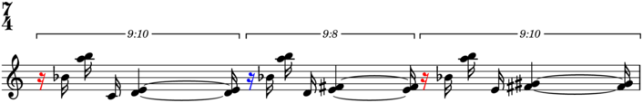>>> selector.color(result) >>> abjad.show(lilypond_file)
-
rleak()¶ Leaks to the right.
Selects runs (each leaked to the right):
>>> staff = abjad.Staff("c'8 r8 d'8 e'8 r8 f'8 g'8 a'8") >>> abjad.setting(staff).auto_beaming = False >>> abjad.show(staff, strict=89)
>>> result = baca.select(staff).runs().map(baca.rleak())
>>> for item in result: ... item ... Selection([Note("c'8"), Rest('r8')]) Selection([Note("d'8"), Note("e'8"), Rest('r8')]) Selection([Note("f'8"), Note("g'8"), Note("a'8")])
>>> selector = baca.select().runs().map(baca.rleak()) >>> result = selector(staff)
>>> selector.print(result) Selection([Note("c'8"), Rest('r8')]) Selection([Note("d'8"), Note("e'8"), Rest('r8')]) Selection([Note("f'8"), Note("g'8"), Note("a'8")])
>>> selector.color(result) >>> abjad.show(staff, strict=89)
Returns new selection (or expression).
-
rleaves()¶ Selects leaves, leaked to the right.
Selects leaves (leaked to the right) in tuplet 1:
>>> tuplets = [ ... "r16 bf'16 <a'' b''>16 c'16 <d' e'>4 ~ <d' e'>16", ... "r16 bf'16 <a'' b''>16 d'16 <e' fs'>4 ~ <e' fs'>16", ... "r16 bf'16 <a'' b''>16 e'16 <fs' gs'>4 ~ <fs' gs'>16", ... ] >>> tuplets = zip([(10, 9), (8, 9), (10, 9)], tuplets) >>> tuplets = [abjad.Tuplet(*_) for _ in tuplets] >>> tuplets = [abjad.select(tuplets)] >>> lilypond_file = abjad.LilyPondFile.rhythm(tuplets) >>> staff = lilypond_file[abjad.Staff] >>> abjad.setting(staff).auto_beaming = False >>> abjad.override(staff).tuplet_bracket.direction = abjad.Up >>> abjad.override(staff).tuplet_bracket.staff_padding = 3 >>> abjad.show(lilypond_file, strict=89)
>>> result = baca.select(staff).tuplets()[1:2].rleaves()
>>> for item in result: ... item ... Rest('r16') Note("bf'16") Chord("<a'' b''>16") Note("d'16") Chord("<e' fs'>4") Chord("<e' fs'>16") Rest('r16')
>>> selector = baca.tuplets()[1:2].rleaves() >>> result = selector(staff)
>>> selector.print(result) Rest('r16') Note("bf'16") Chord("<a'' b''>16") Note("d'16") Chord("<e' fs'>4") Chord("<e' fs'>16") Rest('r16')
>>> selector.color(result) >>> abjad.show(lilypond_file, strict=89)

-
rrun(n)¶ Selects run n (leaked to the right).
Selects run 1 (leaked to the right):
>>> tuplets = [ ... "r16 c'16 c'16 c'16 <d' e'>4 ~ <d' e'>16", ... "r16 d'16 d'16 d'16 <e' fs'>4 ~ <e' fs'>16", ... "r16 e'16 e'16 e'16 <fs' gs'>4 ~ <fs' gs'>16", ... ] >>> tuplets = zip([(10, 9), (8, 9), (10, 9)], tuplets) >>> tuplets = [abjad.Tuplet(*_) for _ in tuplets] >>> tuplets = [abjad.select(tuplets)] >>> lilypond_file = abjad.LilyPondFile.rhythm(tuplets) >>> staff = lilypond_file[abjad.Staff] >>> abjad.setting(staff).auto_beaming = False >>> abjad.override(staff).tuplet_bracket.direction = abjad.Up >>> abjad.override(staff).tuplet_bracket.staff_padding = 3 >>> abjad.show(lilypond_file, strict=89)
>>> result = baca.select(staff).rrun(1)
>>> result Run([Note("d'16"), Note("d'16"), Note("d'16"), Chord("<e' fs'>4"), Chord("<e' fs'>16"), Rest('r16')])
-
rruns()¶ Selects runs (leaked to the right).
Selects runs (leaked to the right):
>>> tuplets = [ ... "r16 c'16 c'16 c'16 <d' e'>4 ~ <d' e'>16", ... "r16 d'16 d'16 d'16 <e' fs'>4 ~ <e' fs'>16", ... "r16 e'16 e'16 e'16 <fs' gs'>4 ~ <fs' gs'>16", ... ] >>> tuplets = zip([(10, 9), (8, 9), (10, 9)], tuplets) >>> tuplets = [abjad.Tuplet(*_) for _ in tuplets] >>> tuplets = [abjad.select(tuplets)] >>> lilypond_file = abjad.LilyPondFile.rhythm(tuplets) >>> staff = lilypond_file[abjad.Staff] >>> abjad.setting(staff).auto_beaming = False >>> abjad.override(staff).tuplet_bracket.direction = abjad.Up >>> abjad.override(staff).tuplet_bracket.staff_padding = 3 >>> abjad.show(lilypond_file, strict=89)
>>> result = baca.select(staff).rruns()
>>> for item in result: ... item ... Run([Note("c'16"), Note("c'16"), Note("c'16"), Chord("<d' e'>4"), Chord("<d' e'>16"), Rest('r16')]) Run([Note("d'16"), Note("d'16"), Note("d'16"), Chord("<e' fs'>4"), Chord("<e' fs'>16"), Rest('r16')]) Run([Note("e'16"), Note("e'16"), Note("e'16"), Chord("<fs' gs'>4"), Chord("<fs' gs'>16")])
>>> selector = baca.rruns() >>> result = selector(staff)
>>> selector.print(result) Run([Note("c'16"), Note("c'16"), Note("c'16"), Chord("<d' e'>4"), Chord("<d' e'>16"), Rest('r16')]) Run([Note("d'16"), Note("d'16"), Note("d'16"), Chord("<e' fs'>4"), Chord("<e' fs'>16"), Rest('r16')]) Run([Note("e'16"), Note("e'16"), Note("e'16"), Chord("<fs' gs'>4"), Chord("<fs' gs'>16")])
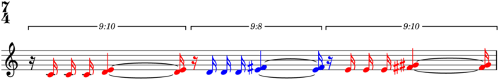>>> selector.color(result) >>> abjad.show(lilypond_file, strict=89)
-
(Selection).run(n)¶ Selects run n.
Selects run -1:
>>> tuplets = [ ... "r16 c'16 c'16 c'16 <d' e'>4 ~ <d' e'>16", ... "r16 d'16 d'16 d'16 <e' fs'>4 ~ <e' fs'>16", ... "r16 e'16 e'16 e'16 <fs' gs'>4 ~ <fs' gs'>16", ... ] >>> tuplets = zip([(10, 9), (8, 9), (10, 9)], tuplets) >>> tuplets = [abjad.Tuplet(*_) for _ in tuplets] >>> tuplets = [abjad.select(tuplets)] >>> lilypond_file = abjad.LilyPondFile.rhythm(tuplets) >>> staff = lilypond_file[abjad.Staff] >>> abjad.setting(staff).auto_beaming = False >>> abjad.override(staff).tuplet_bracket.direction = abjad.Up >>> abjad.override(staff).tuplet_bracket.staff_padding = 3 >>> abjad.show(lilypond_file)
>>> result = abjad.select(staff).run(-1)
>>> result Run([Note("e'16"), Note("e'16"), Note("e'16"), Chord("<fs' gs'>4"), Chord("<fs' gs'>16")])
>>> selector = abjad.select().run(-1) >>> result = selector(staff)
>>> selector.print(result) Run([Note("e'16"), Note("e'16"), Note("e'16"), Chord("<fs' gs'>4"), Chord("<fs' gs'>16")])
>>> selector.color(result) >>> abjad.show(lilypond_file)
-
(Selection).runs()¶ Selects runs.
Selects runs:
>>> tuplets = [ ... "r16 c'16 c'16 c'16 <d' e'>4 ~ <d' e'>16", ... "r16 d'16 d'16 d'16 <e' fs'>4 ~ <e' fs'>16", ... "r16 e'16 e'16 e'16 <fs' gs'>4 ~ <fs' gs'>16", ... ] >>> tuplets = zip([(10, 9), (8, 9), (10, 9)], tuplets) >>> tuplets = [abjad.Tuplet(*_) for _ in tuplets] >>> tuplets = [abjad.select(tuplets)] >>> lilypond_file = abjad.LilyPondFile.rhythm(tuplets) >>> staff = lilypond_file[abjad.Staff] >>> abjad.setting(staff).auto_beaming = False >>> abjad.override(staff).tuplet_bracket.direction = abjad.Up >>> abjad.override(staff).tuplet_bracket.staff_padding = 3 >>> abjad.show(lilypond_file)
>>> result = abjad.select(staff).runs()
>>> for item in result: ... item ... Run([Note("c'16"), Note("c'16"), Note("c'16"), Chord("<d' e'>4"), Chord("<d' e'>16")]) Run([Note("d'16"), Note("d'16"), Note("d'16"), Chord("<e' fs'>4"), Chord("<e' fs'>16")]) Run([Note("e'16"), Note("e'16"), Note("e'16"), Chord("<fs' gs'>4"), Chord("<fs' gs'>16")])
>>> selector = abjad.select().runs() >>> result = selector(staff)
>>> selector.print(result) Run([Note("c'16"), Note("c'16"), Note("c'16"), Chord("<d' e'>4"), Chord("<d' e'>16")]) Run([Note("d'16"), Note("d'16"), Note("d'16"), Chord("<e' fs'>4"), Chord("<e' fs'>16")]) Run([Note("e'16"), Note("e'16"), Note("e'16"), Chord("<fs' gs'>4"), Chord("<fs' gs'>16")])
>>> selector.color(result) >>> abjad.show(lilypond_file)
-
skip(n)¶ Selects skip n.
Selects skip -1:
>>> staff = abjad.Staff("c'8 s e' f' g' s b' s") >>> abjad.setting(staff).auto_beaming = False >>> abjad.attach(abjad.TimeSignature((2, 8)), staff[0]) >>> abjad.attach(abjad.TimeSignature((3, 8)), staff[4]) >>> abjad.attach(abjad.TimeSignature((1, 8)), staff[7]) >>> abjad.show(staff, strict=89)
>>> result = baca.select(staff).skip(-1)
>>> result Skip('s8')
-
skips()¶ Selects skips.
Selects skips:
>>> staff = abjad.Staff("c'8 s e' f' g' s b' s") >>> abjad.setting(staff).auto_beaming = False >>> abjad.attach(abjad.TimeSignature((2, 8)), staff[0]) >>> abjad.attach(abjad.TimeSignature((3, 8)), staff[4]) >>> abjad.attach(abjad.TimeSignature((1, 8)), staff[7]) >>> abjad.show(staff, strict=89)
>>> result = baca.select(staff).skips()
>>> for item in result: ... item ... Skip('s8') Skip('s8') Skip('s8')
-
tleaves()¶ Selects trimmed leaves.
Selects trimmed leaves:
>>> tuplets = [ ... "r16 bf'16 <a'' b''>16 c'16 <d' e'>4 ~ <d' e'>16", ... "r16 bf'16 <a'' b''>16 d'16 <e' fs'>4 ~ <e' fs'>16", ... "r16 bf'16 <a'' b''>16 e'16 <fs' gs'>4 ~ <fs' gs'>16", ... ] >>> tuplets = zip([(10, 9), (8, 9), (10, 9)], tuplets) >>> tuplets = [abjad.Tuplet(*_) for _ in tuplets] >>> tuplets = [abjad.select(tuplets)] >>> lilypond_file = abjad.LilyPondFile.rhythm(tuplets) >>> staff = lilypond_file[abjad.Staff] >>> abjad.setting(staff).auto_beaming = False >>> abjad.override(staff).tuplet_bracket.direction = abjad.Up >>> abjad.override(staff).tuplet_bracket.staff_padding = 3 >>> abjad.show(lilypond_file, strict=89)
>>> result = baca.select(staff).tleaves()
>>> for item in result: ... item ... Note("bf'16") Chord("<a'' b''>16") Note("c'16") Chord("<d' e'>4") Chord("<d' e'>16") Rest('r16') Note("bf'16") Chord("<a'' b''>16") Note("d'16") Chord("<e' fs'>4") Chord("<e' fs'>16") Rest('r16') Note("bf'16") Chord("<a'' b''>16") Note("e'16") Chord("<fs' gs'>4") Chord("<fs' gs'>16")
>>> selector = baca.tleaves() >>> result = selector(staff)
>>> selector.print(result) Note("bf'16") Chord("<a'' b''>16") Note("c'16") Chord("<d' e'>4") Chord("<d' e'>16") Rest('r16') Note("bf'16") Chord("<a'' b''>16") Note("d'16") Chord("<e' fs'>4") Chord("<e' fs'>16") Rest('r16') Note("bf'16") Chord("<a'' b''>16") Note("e'16") Chord("<fs' gs'>4") Chord("<fs' gs'>16")
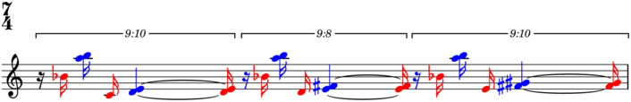>>> selector.color(result) >>> abjad.show(lilypond_file, strict=89)
-
(Selection).top()¶ Selects top components.
Selects top components (up from leaves):
>>> string = r"c'8 d' r \times 2/3 { e' r f' } g' a' r" >>> staff = abjad.Staff(string) >>> abjad.setting(staff).auto_beaming = False >>> abjad.show(staff)
>>> result = abjad.select(staff).leaves().top()
>>> for item in result: ... item ... Note("c'8") Note("d'8") Rest('r8') Tuplet(Multiplier(2, 3), "e'8 r8 f'8") Note("g'8") Note("a'8") Rest('r8')
>>> selector = abjad.select().leaves().top() >>> result = selector(staff)
>>> selector.print(result) Note("c'8") Note("d'8") Rest('r8') Tuplet(Multiplier(2, 3), "e'8 r8 f'8") Note("g'8") Note("a'8") Rest('r8')
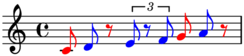>>> selector.color(result) >>> abjad.show(staff)
-
(Selection).tuplet(n)¶ Selects tuplet n.
Selects tuplet -1:
>>> tuplets = [ ... "r16 bf'16 <a'' b''>16 c'16 <d' e'>4 ~ <d' e'>16", ... "r16 bf'16 <a'' b''>16 d'16 <e' fs'>4 ~ <e' fs'>16", ... "r16 bf'16 <a'' b''>16 e'16 <fs' gs'>4 ~ <fs' gs'>16", ... ] >>> tuplets = zip([(10, 9), (8, 9), (10, 9)], tuplets) >>> tuplets = [abjad.Tuplet(*_) for _ in tuplets] >>> tuplets = [abjad.select(tuplets)] >>> lilypond_file = abjad.LilyPondFile.rhythm(tuplets) >>> staff = lilypond_file[abjad.Staff] >>> abjad.setting(staff).auto_beaming = False >>> abjad.override(staff).tuplet_bracket.direction = abjad.Up >>> abjad.override(staff).tuplet_bracket.staff_padding = 3 >>> abjad.show(lilypond_file)
>>> result = abjad.select(staff).tuplet(-1)
>>> result Tuplet(Multiplier(10, 9), "r16 bf'16 <a'' b''>16 e'16 <fs' gs'>4 ~ <fs' gs'>16")
>>> selector = abjad.select().tuplet(-1) >>> result = selector(staff)
>>> selector.print(result) Tuplet(Multiplier(10, 9), "r16 bf'16 <a'' b''>16 e'16 <fs' gs'>4 ~ <fs' gs'>16")
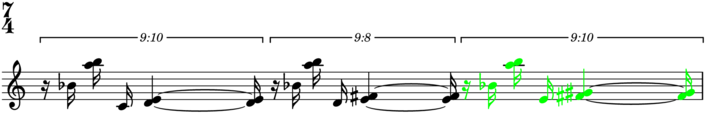>>> selector.color(result) >>> abjad.show(lilypond_file)
-
(Selection).tuplets()¶ Selects tuplets.
Selects tuplets:
>>> tuplets = [ ... "r16 bf'16 <a'' b''>16 c'16 <d' e'>4 ~ <d' e'>16", ... "r16 bf'16 <a'' b''>16 d'16 <e' fs'>4 ~ <e' fs'>16", ... "r16 bf'16 <a'' b''>16 e'16 <fs' gs'>4 ~ <fs' gs'>16", ... ] >>> tuplets = zip([(10, 9), (8, 9), (10, 9)], tuplets) >>> tuplets = [abjad.Tuplet(*_) for _ in tuplets] >>> tuplets = [abjad.select(tuplets)] >>> lilypond_file = abjad.LilyPondFile.rhythm(tuplets) >>> staff = lilypond_file[abjad.Staff] >>> abjad.setting(staff).auto_beaming = False >>> abjad.override(staff).tuplet_bracket.direction = abjad.Up >>> abjad.override(staff).tuplet_bracket.staff_padding = 3 >>> abjad.show(lilypond_file)
>>> result = abjad.select(staff).tuplets()
>>> for item in result: ... item ... Tuplet(Multiplier(10, 9), "r16 bf'16 <a'' b''>16 c'16 <d' e'>4 ~ <d' e'>16") Tuplet(Multiplier(8, 9), "r16 bf'16 <a'' b''>16 d'16 <e' fs'>4 ~ <e' fs'>16") Tuplet(Multiplier(10, 9), "r16 bf'16 <a'' b''>16 e'16 <fs' gs'>4 ~ <fs' gs'>16")
>>> selector = abjad.select().tuplets() >>> result = selector(staff)
>>> selector.print(result) Tuplet(Multiplier(10, 9), "r16 bf'16 <a'' b''>16 c'16 <d' e'>4 ~ <d' e'>16") Tuplet(Multiplier(8, 9), "r16 bf'16 <a'' b''>16 d'16 <e' fs'>4 ~ <e' fs'>16") Tuplet(Multiplier(10, 9), "r16 bf'16 <a'' b''>16 e'16 <fs' gs'>4 ~ <fs' gs'>16")
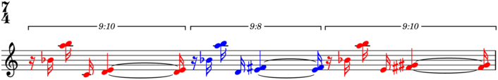>>> selector.color(result) >>> abjad.show(lilypond_file)
-
(Selection).with_next_leaf()¶ Extends selection with next leaf.
Selects runs (each with next leaf):
>>> staff = abjad.Staff("c'8 r8 d'8 e'8 r8 f'8 g'8 a'8") >>> abjad.setting(staff).auto_beaming = False >>> abjad.show(staff)
>>> result = abjad.select(staff).runs() >>> result = result.map(abjad.select().with_next_leaf())
>>> for item in result: ... item ... Selection([Note("c'8"), Rest('r8')]) Selection([Note("d'8"), Note("e'8"), Rest('r8')]) Selection([Note("f'8"), Note("g'8"), Note("a'8")])
>>> selector = abjad.select().runs() >>> selector = selector.map(abjad.select().with_next_leaf()) >>> result = selector(staff)
>>> selector.print(result) Selection([Note("c'8"), Rest('r8')]) Selection([Note("d'8"), Note("e'8"), Rest('r8')]) Selection([Note("f'8"), Note("g'8"), Note("a'8")])
>>> selector.color(result) >>> abjad.show(staff)
Selects pitched tails (each with next leaf):
>>> staff = abjad.Staff(r"c'8 r d' ~ d' e' ~ e' r8 f'8") >>> abjad.setting(staff).auto_beaming = False >>> abjad.show(staff)
>>> getter = abjad.select()[-1].select().with_next_leaf() >>> result = abjad.select(staff).logical_ties(pitched=True) >>> result = result.map(getter)
>>> for item in result: ... item ... Selection([Note("c'8"), Rest('r8')]) Selection([Note("d'8"), Note("e'8")]) Selection([Note("e'8"), Rest('r8')]) Selection([Note("f'8")])
>>> selector = abjad.select().logical_ties(pitched=True) >>> selector = selector.map(getter) >>> result = selector(staff)
>>> selector.print(result) Selection([Note("c'8"), Rest('r8')]) Selection([Note("d'8"), Note("e'8")]) Selection([Note("e'8"), Rest('r8')]) Selection([Note("f'8")])
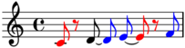>>> selector.color(result) >>> abjad.show(staff)
Pitched logical ties (each with next leaf) is the correct selection for single-pitch sustain pedal applications.
Selects pitched logical ties (each with next leaf):
>>> staff = abjad.Staff(r"c'8 r d' ~ d' e' ~ e' r8 f'8") >>> abjad.setting(staff).auto_beaming = False >>> abjad.show(staff)
>>> result = abjad.select(staff).logical_ties(pitched=True) >>> result = result.map(abjad.select().with_next_leaf())
>>> for item in result: ... item ... Selection([Note("c'8"), Rest('r8')]) Selection([Note("d'8"), Note("d'8"), Note("e'8")]) Selection([Note("e'8"), Note("e'8"), Rest('r8')]) Selection([Note("f'8")])
>>> selector = abjad.select().logical_ties(pitched=True) >>> selector = selector.map(abjad.select().with_next_leaf()) >>> result = selector(staff)
>>> selector.print(result) Selection([Note("c'8"), Rest('r8')]) Selection([Note("d'8"), Note("d'8"), Note("e'8")]) Selection([Note("e'8"), Note("e'8"), Rest('r8')]) Selection([Note("f'8")])
>>> for item in result: ... abjad.attach(abjad.PianoPedalSpanner(), item) ...
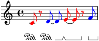>>> selector.color(result) >>> manager = abjad.override(staff).sustain_pedal_line_spanner >>> manager.staff_padding = 6 >>> abjad.show(staff)
Returns new selection (or expression).
-
(Selection).with_previous_leaf()¶ Extends selection with previous leaf.
Selects runs (each with previous leaf):
>>> staff = abjad.Staff("c'8 r8 d'8 e'8 r8 f'8 g'8 a'8") >>> abjad.setting(staff).auto_beaming = False >>> abjad.show(staff)
>>> getter = abjad.select().with_previous_leaf() >>> result = abjad.select(staff).runs().map(getter)
>>> for item in result: ... item ... Selection([Note("c'8")]) Selection([Rest('r8'), Note("d'8"), Note("e'8")]) Selection([Rest('r8'), Note("f'8"), Note("g'8"), Note("a'8")])
Selects pitched heads (each with previous leaf):
>>> staff = abjad.Staff(r"c'8 r d' ~ d' e' ~ e' r8 f'8") >>> abjad.setting(staff).auto_beaming = False >>> abjad.show(staff)
>>> getter = abjad.select()[0].select().with_previous_leaf() >>> result = abjad.select(staff).logical_ties(pitched=True) >>> result = result.map(getter)
>>> for item in result: ... item ... Selection([Note("c'8")]) Selection([Rest('r8'), Note("d'8")]) Selection([Note("d'8"), Note("e'8")]) Selection([Rest('r8'), Note("f'8")])
>>> selector = abjad.select().logical_ties(pitched=True) >>> selector = selector.map(getter) >>> result = selector(staff)
>>> selector.print(result) Selection([Note("c'8")]) Selection([Rest('r8'), Note("d'8")]) Selection([Note("d'8"), Note("e'8")]) Selection([Rest('r8'), Note("f'8")])
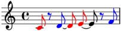>>> selector.color(result) >>> abjad.show(staff)
Returns new selection (or expression).
-
wleaves()¶ Selects leaves, leaked “wide” (to both the left and right).
Selects leaves (leaked wide) in tuplet 1:
>>> tuplets = [ ... "r16 bf'16 <a'' b''>16 c'16 <d' e'>4 ~ <d' e'>16", ... "r16 bf'16 <a'' b''>16 d'16 <e' fs'>4 ~ <e' fs'>16", ... "r16 bf'16 <a'' b''>16 e'16 <fs' gs'>4 ~ <fs' gs'>16", ... ] >>> tuplets = zip([(10, 9), (8, 9), (10, 9)], tuplets) >>> tuplets = [abjad.Tuplet(*_) for _ in tuplets] >>> tuplets = [abjad.select(tuplets)] >>> lilypond_file = abjad.LilyPondFile.rhythm(tuplets) >>> staff = lilypond_file[abjad.Staff] >>> abjad.setting(staff).auto_beaming = False >>> abjad.override(staff).tuplet_bracket.direction = abjad.Up >>> abjad.override(staff).tuplet_bracket.staff_padding = 3 >>> abjad.show(lilypond_file, strict=89)
>>> result = baca.select(staff).tuplets()[1:2].wleaves()
>>> for item in result: ... item ... Chord("<d' e'>16") Rest('r16') Note("bf'16") Chord("<a'' b''>16") Note("d'16") Chord("<e' fs'>4") Chord("<e' fs'>16") Rest('r16')
Read-only properties
-
(Selection).items¶ Gets items.
>>> abjad.Staff("c'4 d'4 e'4 f'4")[:].items (Note("c'4"), Note("d'4"), Note("e'4"), Note("f'4"))
Returns tuple.
-